Question 1 four and beep or boop. The word red should be hidden.
Question 2 What are the colors?
- avocado = green
- blueberries = blue
- banana = yellow
- strawberry = red
Question 3 Which fruit has a red color?
Answer with true_IGNORE or false_IGNORE:
- avocado = false1
- blueberries = false2
- banana = false3
- strawberry = true0
Question 4 What color is the item? 4 possibilities but only 1 will be shown.
- cherry
- strawberry
- stop sign
- lipstick
- A substring of length k within some larger biological sequence (e.g. DNA or amino acid chain). For example, in the DNA sequence GAAATC, the following k-mer's exist:
| k | k-mers |
|---|---|
| 1 | G A A A T C |
| 2 | GA AA AA AT TC |
| 3 | GAA AAA AAT ATC |
| 4 | GAAA AAAT AATC |
| 5 | GAAAT AAATC |
| 6 | GAAATC |
- A substring of length 2k + d within some larger biological sequence (e.g. DNA or amino acid chain) where the first k elements and the last k elements are known but the d elements in between isn't known.
When identifying a kd-mer with a specific k and d, the proper syntax is (k, d)-mer. For example, (1, 2)-mer represents a kd-mer with k=1 and d=2. In the DNA sequence GAAATC, the following (1, 2)-mer's exist: G--A, A--T, A--C.
- Given double-stranded DNA, each ...
- strand's direction is opposite of the other,
- strand position has a nucleotide that complements the nucleotide at that same position on the other stand (A ⟷ T and C ⟷ G)

The reverse complement means that a stretch of single-stranded DNA has its direction reversed (5' and 3' switched) and nucleotides complemented.
- 5' (5 prime) and 3' (3 prime) describe the opposite ends of DNA. The chemical structure at each end is what defines if it's 5' or 3' -- each end is guaranteed to be different from the other. The forward direction on DNA is defined as 5' to 3', while the backwards direction is 3' to 5'.
Two complementing DNA strands will always be attached in opposite directions.

- An enzyme that replicates a strand of DNA. That is, DNA polymerase walks over a single strand of DNA bases (not the strand of base pairs) and generates a strand of complements. Before DNA polymerase can attach itself and start replicating DNA, it requires a primer.

DNA polymerase is unidirectional, meaning that it can only walk a DNA strand in one direction: reverse (3' to 5')
- The process of DNA replication requires that DNA's 2 complementing strands be unwound and split open. The area where the DNA starts to split is called the replication fork. In bacteria, the replication fork starts at the replication origin and keeps expanding until it reaches the replication terminus. Special enzymes called DNA polymerases walk over each unwound strand and create complementing strands.

- The point in DNA at which replication starts. May be shortened to ori.
- The point in DNA at which replication ends. May be shortened to ter.
- Bacteria are known to have a single chromosome of circular / looping DNA. In this DNA, the replication origin (ori) is the region of DNA where replication starts, while the replication terminus (ter) is where replication ends.

If you split up the DNA based on ori and ter being cutting points, you end up with 4 distinct strands. Given that the direction of a strand is 5' to 3', if the direction of the strand starts at...
-
ori and ends at ter, it's called the forward half-strand.

-
ter and ends at ori, it's called the reverse half-strand.

Given the 2 strands tha make up a DNA molecule, the strand that goes in the...
- forward half-strand (5' to 3') is called the lagging half-strand.
- reverse half-strand (3' to 5') is called the leading half-strand.
This nomenclature has to do with DNA polymerase. Since DNA polymerase can only walk in the reverse direction (3' to 5'), it synthesizes the leading half-strand in one shot. For the lagging half-strand (5' to 3'), multiple DNA polymerases have to used to synthesize DNA, each binding to the lagging strand and walking backwards a small amount to generate a small fragment of DNA (Okazaki fragment). the process is much slower for the lagging half-strand, that's why it's called lagging.
- A small fragment of DNA generated by DNA polymerase for forward half-strands. DNA synthesis for the forward half-strands can only happen in small pieces. As the fork open ups every ~2000 nucleotides, DNA polymerase attaches to the end of the fork on the forward half-strand and walks in reverse to generate that small segment (DNA polymerase can only walk in the reverse direction).
- An enzyme that sews together short segments of DNA called Okazaki fragments by binding the phosphate group on the end of one strand with the deoxyribose group on the other strand.
- A sequence in the ori that the DnaA protein (responsible for DNA replication) binds to.
- Two strands of DNA bound together, where each strand is the reverse complement of the other.
- A segment of DNA that contains the instructions for either a protein or functional RNA.
- The final synthesized material resulting from the instructions that make up a gene. That synthesized material either being a protein or functional RNA.
- The process of copying a gene to mRNA. Specifically, the enzyme RNA polymerase copies the segment of DNA that makes up that gene to a strand of RNA.

- The process of turning mRNA to protein. Specifically, a ribosome takes in the mRNA generated by transcription and outputs the protein that it codes for.

- The process by which a gene is synthesized into a gene product. When the gene product is...
- a protein, the gene is transcribed to mRNA and translated to a protein.
- functional RNA, the gene is transcribed to a type of RNA that isn't mRNA (only mRNA is translated to a protein).

- The proteins encoded by these genes effect gene expression for certain other genes. That is, a regulatory protein can cause certain other genes to be expressed more (promote gene expression) or less (repress gene expression).
Regulatory genes are often controlled by external factors (e.g. sunlight, nutrients, temperature, etc..)
- A feedback loop is a system where the output (or some part of the output) is fed back into the system to either promote or repress further outputs.

A positive feedback loop amplifies the output while a negative feedback loop regulates the output. Negative feedback loops in particular are important in biology because they allow organisms to maintain homeostasis / equilibrium (keep a consistent internal state). For example, the system that regulates core temperatures in a human is a negative feedback loop. If a human's core temperature gets too...
- low, they shiver to drive the temperature up.
- high, they sweat to drive the temperature down.
In the example above, the output is the core temperature. The body monitors its core temperature and employs mechanisms to bring it back to normal if it goes out of range (e.g. sweat, shiver). The outside temperature is influencing the body's core temperature as well as the internal shivering / sweating mechanisms the body employs.

- A biological clock that synchronizes roughly around the earth's day-night cycle. This internal clock helps many species regulate their physical and behavioural attributes. For example, hunt during the night vs sleep during the day (e.g. nocturnal owls).
- The area just before some interval of DNA. Since the direction of DNA is 5' to 3', this area is towards the 5' end (upper end).
- The area just after some interval of DNA. Since the direction of DNA is 5' to 3', this area is towards the 3' end (lower end).
- A regulatory protein that controls the rate of transcription for some gene that it has influence over (the copying of DNA to mRNA). The protein binds to a specific sequence in the gene's upstream region.
- A pattern that matches against many different k-mers, where those matched k-mers have some shared biological significance. The pattern matches a fixed k where each position may have alternate forms. The simplest way to think of a motif is a regex pattern without quantifiers. For example, the regex [AT]TT[GC]C may match to ATTGC, ATTCC, TTTGC, and TTTCC.
- A specific nucleotide sequence that matches a motif. For example, given a motif represented by the regex [AT]TT[GC]C, the sequences ATTGC, ATTCC, TTTGC, and TTTCC would be its motif members.
- A set of k-mers stacked on top of each other in a matrix, where the k-mers are either...
- motif members of the same motif,
- or suspected motif members of the same motif.
For example, the motif [AT]TT[GC]C has the following matrix:
| 0 | 1 | 2 | 3 | 4 |
|---|---|---|---|---|
| A | T | T | G | C |
| A | T | T | C | C |
| T | T | T | G | C |
| T | T | T | C | C |
- The motif of a transcription factor, typically 8 to 12 nucleotides in length.
- The physical binding site for a transcription factor. A gene that's regulated by a transcription factor needs a sequence located in its upstream region that the transcription factor can bind to: a motif member of that transcription factor's regulatory motif.
⚠️NOTE️️️⚠️
A gene's upstream region is the 600 to 1000 nucleotides preceding the start of the gene.
- A single strand of DNA generated from mRNA. The enzyme reverse transcriptase scans over the mRNA and creates the complementing single DNA strand.

The mRNA portion breaks off, leaving the single-stranded DNA.

- A device used to compare gene expression. This works by measuring 2 mRNA samples against each other: a control sample and an experimental sample. The samples could be from...
- the same organism but at different times.
- diseased and healthy versions of the same organism.
- etc..
Both mRNA samples are converted to cDNA and are given fluorescent dyes. The control sample gets dyed green while the experimental sample gets dyed red.

A sheet is broken up into multiple regions, where each region has the cDNA for one specific gene from the control sample printed.

The idea is that once the experimental cDNA is introduced to that region, it should bind to the control cDNA that's been printed to form double-stranded DNA. The color emitted in a region should correspond to the amount of gene expression for the gene that region represents. For example, if a region on the sheet is fully yellow, it means that the gene expression for that gene is roughly equal (red mixed with green is yellow).
- An algorithm that tries to speed things up by taking the locally optimal choice at each step. That is, the algorithm doesn't look more than 1 step ahead.
For example, imagine a chess playing AI that had a strategy of trying to eliminate the other player's most valuable piece at each turn. It would be considered greedy because it only looks 1 move ahead before taking action. Normal chess AIs / players look many moves ahead before taking action. As such, the greedy AI may be fast but it would very likely lose most matches.
- When a probability is based off past events, 0.0 and 1.0 shouldn't be used. That is, if you've...
- never seen an even occur in the past, it doesn't mean that there's a 0.0 probability of it occurring next.
- always seen an event occur in the past, it doesn't mean that there's a 1.0 probability of it occurring next.
Unless you're dealing with hard logical statements where prior occurrences don't come in to play (e.g. 1+1=2), you should include a small chance that some extremely unlikely event may happen. The example tossed around is "the probability that the sun will not rise tomorrow." Prior recorded observations show that sun has always risen, but that doesn't mean that there's a 1.0 probability of the sun rising tomorrow (e.g. some extremely unlikely cataclysmic event may prevent the sun from rising).
- If some independent true/false event occurs n times, and s of those n times were successes, it's natural for people to assume the probability of success is . However, if the number of successes is 0, the probability would be 0.0. Cromwell's rule states that when a probability is based off past events, 0.0 and 1.0 shouldn't be used. As such, a more appropriate / meaningful measure of probability is .
For example, imagine you're sitting on a park bench having lunch. Of the 8 birds you've seen since starting your lunch, all have been pigeons. If you were to calculate the probability that the next bird you'll see a crow, would be flawed because it states that there's no chance that the next bird will be a crow (there obviously is a chance, but it may be a small chance). Instead, applying Laplace's rule allows for the small probability that a crow may be seen next: .
Laplace's rule of succession is more meaningful when the number of trials (n) is small.
- When a zero is replaced with a small number to prevent unfair scoring. See Laplace's rule of succession.
- A randomized algorithm that delivers a guaranteed exact solution. That is, even though the algorithm makes random decisions it is guaranteed to converge on the exact solution to the problem its trying to solve (not an approximate solution).
An example of a Las Vegas algorithm is randomized quicksort (randomness is applied when choosing the pivot).
- A randomized algorithm that delivers an approximate solution. Because these algorithms are quick, they're typically run many times. The approximation considered the best out of all runs is the one that gets chosen as the solution.
An example of a Monte Carlo algorithm is a genetic algorithm to optimize the weights of a deep neural network. That is, a step of the optimization requires running n different neural networks to see which gives the best result, then replacing those n networks with n copies of the best performing network where each copy has randomly tweaked weights. At some point the algorithm will stop producing incrementally better results.
Perform the optimization (the entire thing, not just a single step) thousands of times and pick the best network.
- The k-mer generated by selecting the most abundant column at each index of a motif matrix.
| 0 | 1 | 2 | 3 | 4 | |
|---|---|---|---|---|---|
| k-mer 1 | A | T | T | G | C |
| k-mer 2 | A | T | T | C | C |
| k-mer 3 | T | T | T | G | C |
| k-mer 4 | T | T | T | C | C |
| k-mer 5 | A | T | T | C | G |
| consensus | A | T | T | C | C |
The generated k-mer may also use a hybrid alphabet. The consensus string for the same matrix above using IUPAC nucleotide codes: WTTSS.
- The uncertainty associated with a random variable. Given some set of outcomes for a variable, it's calculated as .
This definition is for information theory. In other contexts (e.g. physics, economics), this term has a different meaning.
- In the context of a ...
- specific organism, genome refers to all of the DNA for that organism (e.g. a specific E. coli cell).
- specific species, genome refers to the idealized DNA for that species (e.g. all E. coli).
DNA of individual cells mutate all the time. For example, even in multi-cell organism, two cells from the same mouse may not have the exact same DNA.
- The ordered elements that make up some biological entity. For example, a ...
- DNA sequence contains the set of nucleotides and their positions for that DNA strand.
- peptide sequence contains the set of amino acids and their positions for that peptide.
- The process of determining which nucleotides are assigned to which positions in a strand of DNA or RNA.
The machinery used for DNA sequencing is called a sequencer. A sequencer takes multiple copies of the same DNA, breaks that DNA up into smaller fragments, and scans in those fragments. Each fragment is typically the same length but has a unique starting offset. Because the starting offsets are all different, the original larger DNA sequence can be guessed at by finding fragment with overlapping regions and stitching them together.
| 0 | 1 | 2 | 3 | 4 | 5 | 6 | 7 | 8 | 9 | |
|---|---|---|---|---|---|---|---|---|---|---|
| read 1 | C | T | T | C | T | T | ||||
| read 2 | G | C | T | T | C | T | ||||
| read 3 | T | G | C | T | T | C | ||||
| read 4 | T | T | G | C | T | T | ||||
| read 5 | A | T | T | G | C | T | ||||
| reconstructed | A | T | T | G | C | T | T | C | T | T |
- A machine that performs DNA or RNA sequencing.
- An error caused by a sequencer returning a fragment where a nucleotide was misinterpreted at one or more positions (e.g. offset 3 was actually a C but it got scanned in as a G).
⚠️NOTE️️️⚠️
This term may also be used in reference to homopolymer errors, known to happen with nanopore technology. From here...
A homopolymer is when you have stretches of the same nucleotide, and the error is miscounting the number of them. e.g: GAAAC could be called as "GAAC" or "GAAAAC" or even "GAAAAAAAC".
- A segment of genome scanned in during the process of sequencing.
- A segment of genome scanning in during the process of sequencing, where the middle of the segment is unknown. That is, the first k elements and the last k elements are known, but the d elements in between aren't known. The total size of the segment is 2k + d.
Sequencers provide read-pairs as an alternative to longer reads because the longer a read is the more errors it contains.
See kd-mer.
- A scanned sequence returned by a sequencer. Represented as either a read or a read-pair.
- The process of stitching together overlapping fragments to guess the sequence of the original larger DNA sequence that those fragments came from.
- When representing a sequence that isn't fully conserved, it may be more appropriate to use an alphabet where each letter can represent more than 1 nucleotide. For example, the IUPAC nucleotide codes provides the following alphabet:
- A = A
- C = C
- T = T
- G = G
- W = A or T
- S = G or C
- K = G or T
- Y = C or T
- ...
If the sequence being represented can be either AAAC or AATT, it may be easier to represent a single string of AAWY.
- A hybrid alphabet with the following mapping:
| Letter | Base |
|---|---|
| A | Adenine |
| C | Cytosine |
| G | Guanine |
| T (or U) | Thymine (or Uracil) |
| R | A or G |
| Y | C or T |
| S | G or C |
| W | A or T |
| K | G or T |
| M | A or C |
| B | C or G or T |
| D | A or G or T |
| H | A or C or T |
| V | A or C or G |
| N | any base |
| . or - | gap |
- A graphical representation of how conserved a sequence's positions are. Each position has its possible nucleotides stacked on top of each other, where the height of each nucleotide is based on how conserved it is. The more conserved a position is, the taller that column will be.
Typically applied to DNA or RNA, and May also be applied to other biological sequence types (e.g. amino acids).
The following is an example of a logo generated from a motif sequence:
- A DNA sequence that can change its position within a genome, altering the genome size. They come in two flavours:
- Class I (retrotransposon) - Behaves similarly to copy-and-paste where the sequence is duplicated. DNA is transcribed to RNA, followed by that RNA being reverse transcribed back to DNA by an enzyme called reverse transcriptase.
- Class II (DNA transposon) - Behaves similarly to cut-and-paste where the sequence is moved. DNA is physically cut out by an enzyme called transposases and placed back in at some other location.
Often times, transposons cause disease. For example, ...
- insertion of a transposon into a gene will likely disable that gene.
- after a transposon leaves a gene, the gap likely won't be repaired correctly.
- An internal representation of a graph where each node has a list of pointers to other nodes that it can forward to.

The graph above represented as an adjacency list would be...
| From | To |
|---|---|
| A | B |
| B | C |
| C | D,E |
| D | F |
| E | D,F |
| F |
- An internal representation of a graph where a matrix defines the number of times that each node forwards to every other node.
The graph above represented as an adjacency matrix would be...
| A | B | C | D | E | F | |
|---|---|---|---|---|---|---|
| A | 0 | 1 | 0 | 0 | 0 | 0 |
| B | 0 | 0 | 1 | 0 | 0 | 0 |
| C | 0 | 0 | 0 | 1 | 1 | 0 |
| D | 0 | 0 | 0 | 0 | 0 | 1 |
| E | 0 | 0 | 0 | 1 | 0 | 1 |
| F | 0 | 0 | 0 | 0 | 0 | 0 |
- A path in a graph that visits every node exactly once.
The graph below has the Hamiltonian path ABCEDF.
- A path in a graph that visits every edge exactly once.
In the graph below, the Eulerian path is (A,B), (B,C), (C,D), (D,E), (E,C), (C,D), (D,F).

- An Eulerian path that forms a cycle. That is, a path in a graph that is a cycle and visits every edge exactly once.
The graph below has an Eulerian cycle of (A,B), (B,C) (C,D), (D,F), (F,C), (C,A).

If a graph contains an Eulerian cycle, it's said to be an Eulerian graph.
- For a graph to be a Eulerian graph, it must have an Eulerian cycle: a path in a graph that is a cycle and visits every edge exactly once. For a graph to have an Eulerian cycle, it must be both balanced and strongly connected.

Note how in the graph above, ...
-
every node is reachable from every other node (strongly connected),
-
every node has an outdegree equal to its indegree (balanced).
Node Indegree Outdegree A 1 1 B 1 1 C 2 2 D 1 1 F 1 1
In contrast, the following graphs are not Eulerian graphs (no Eulerian cycles exist):
-
Strongly connected but not balanced.

-
Balanced but not strongly connected.

-
Balanced but disconnected (not strongly connected).

- A graph is disconnected if you can break it out into 2 or more distinct sub-graphs without breaking any paths. In other words, the graph contains at least two nodes which aren't contained in any path.
The graph below is disconnected because there is no path that contains E, F, G, or H and A, B, C, or D.

The graph below is connected.

- A graph is strongly connected if every node is reachable from every other node.
The graph below is not strongly connected because neither A nor B is reachable by C, D, E, or F.
The graph below is strongly connected because all nodes are reachable from all nodes.
- The number of edges leading into / out of a node of a directed graph.
The node below has an indegree of 3 and an outdegree of 1.

- A node of a directed graph that has an equal indegree and outdegree. That is, the number of edges coming in is equal to the number of edges going out.
The node below has an indegree and outdegree of 1. It is a balanced node.

- A directed graph where ever node is balanced.
The graph below is balanced graph because each node has an equal indegree and outdegree.
| Node | Indegree | Outdegree |
|---|---|---|
| A | 1 | 1 |
| B | 1 | 1 |
| C | 2 | 2 |
| D | 1 | 1 |
| F | 1 | 1 |
- A graph representing the k-mers making up a string. Specifically, the graph is built in 2 steps:
-
Each node is a fragment.
-
Each edge is between overlapping fragments (nodes), where the ...
- source node has the overlap in its suffix .
- destination node has the overlap in its prefix.
Overlap graphs used for genome assembly.
- A special graph representing the k-mers making up a string. Specifically, the graph is built in 2 steps:
-
Each k-mer is represented as an edge connecting 2 nodes. The ...
- source node represents the first 0 to n-1 elements of the k-mer,
- destination node represents last 1 to n elements of the k-mer,
- and edge represents the k-mer.
For example, ...

-
Each node representing the same value is merged together to form the graph.
For example, ...

De Bruijn graphs are used for genome assembly. It's much faster to assemble a genome from a de Bruijn graph than it is to from an overlap graphs.
De Bruijn graphs were originally invented to solve the k-universal string problem.
- For some alphabet and k, a string is considered k-universal if it contains every k-mer for that alphabet exactly once. For example, for an alphabet containing only 0 and 1 (binary) and k=3, a 3-universal string would be 0001110100 because it contains every 3-mer exactly once:
- 000: 0001110100
- 001: 0001110100
- 010: 0001110100
- 011: 0001110100
- 100: 0001110100
- 101: 0001110100
- 110: 0001110100
- 111: 0001110100
⚠️NOTE️️️⚠️
This is effectively assembly. There are a set of k-mers and they're being stitched together to form a larger string. The only difference is that the elements aren't nucleotides.
De Bruijn graphs were invented in an effort to construct k-universal strings for arbitrary values of k. For example, given the k-mers in the example above (000, 001, ...), a k-universal string can be found by constructing a de Bruijn graph from the k-mers and finding a Eulerian cycle in that graph.

There are multiple Eulerian cycles in the graph, meaning that there are multiple 3-universal strings:
- 0001110100
- 0011101000
- 1110001011
- 1100010111
- ...
For larger values of k (e.g. 20), finding k-universal strings would be too computationally intensive without De Bruijn graphs and Eulerian cycles.
- Given a substring from some larger sequence that was reconstructed from a set of fragments, the coverage of that substring is the number of reads used to construct it. The substring length is typically 1: the coverage for each position of the sequence.
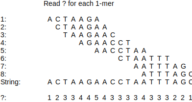
- The concept of taking multiple reads and breaking them up into smaller reads.
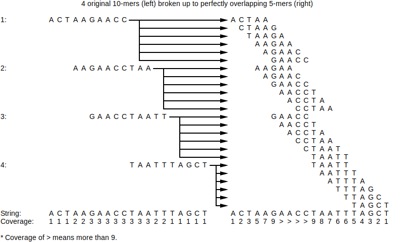
When read breaking, smaller k-mers result in better coverage but also make the de Bruijn graph more tangled. The more tangled the de Bruijn graph is, the harder it is to infer the full sequence.
In the example above, the average coverage...
- for the left-hand side (original) is 2.1.
- for the right-hand side (broken) is 4.
See also: read-pair breaking.
⚠️NOTE️️️⚠️
What purpose does this actually serve? Mimicking 1 long read as n shorter reads isn't equivalent to actually having sequenced those n shorter reads. For example, what if the longer read being broken up has an error? That error replicates when breaking into n shorter reads, which gives a false sense of having good coverage and makes it seems as if it wasn't an error.
- The concept of taking multiple read-pairs and breaking them up into read-pairs with a smaller k.

When read-pair breaking, a smaller k results in better coverage but also make the de Bruijn graph more tangled. The more tangled the de Bruijn graph is, the harder it is to infer the full sequence.
In the example above, the average coverage...
- for the left-hand side (original) is 1.6.
- for the right-hand side (broken) is 2.5.
See also: read breaking.
⚠️NOTE️️️⚠️
What purpose does this actually serve? Mimicking 1 long read-pair as n shorter read-pairs isn't equivalent to actually having sequenced those n shorter read-pairs. For example, what if the longer read-pair being broken up has an error? That error replicates when breaking into n shorter read-pairs, which gives a false sense of having good coverage and makes it seems as if it wasn't an error.
- An unambiguous stretch of DNA derived by searching an overlap graph / de Bruijn graph for paths that are the longest possible stretches of non-branching nodes (indegree and outdegree of 1). Each stretch will be a path that's either ...
-
a line: each node has an indegree and outdegree of 1.

-
a cycle: each node has an indegree and outdegree of 1 and it loops.
-
a line sandwiched between branching nodes: nodes in between have an indegree and outdegree of 1 but either...
- starts at a node where indegree != 1 but outdegree == 1 (incoming branch),
- or ends at a node where indegree == 1 but outdegree != 1 (outgoing branch),
- or both.
Real-world complications with DNA sequencing make de Bruijn / overlap graphs too tangled to guess a full genome: both strands of double-stranded DNA are sequenced and mixed into the graph, sequencing errors make into the graph, repeats regions of the genome can't be reliably handled by the graph, poor coverage, etc.. As such, biologists / bioinformaticians have no choice but to settle on contigs.
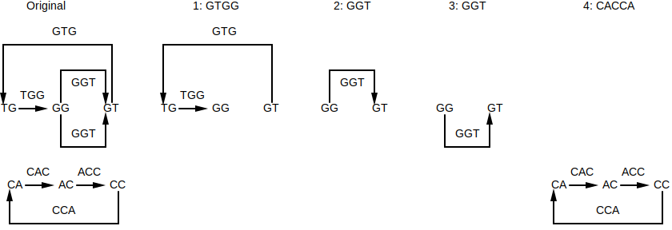
- Elements that make up RNA, similar to how nucleotides are the elements that make up DNA.
- A = Adenine (same as nucleotide)
- C = Cytosine (same as nucleotide)
- G = Guanine (same as nucleotide)
- U = Uracil (replace nucleotide Thymine)
- A substance (typically an enzyme) for killing, preventing, or inhibiting the grow of bacterial infections.
- The building blocks of peptides / proteins, similar to how nucleotides are the building blocks of DNA.
⚠️NOTE️️️⚠️
Answer shouldn't be plural.
- Amino acids that are used during translation. These are the 20 amino acids that the ribosome translates from codons. In contrast, there are many other non-proteinogenic amino acids that are used for non-ribosomal peptides.
The term "proteinogenic" means "protein creating".
| 1 Letter Code | 3 Letter Code | Amino Acid | Mass (daltons) |
|---|---|---|---|
| A | Ala | Alanine | 71.04 |
| C | Cys | Cysteine | 103.01 |
| D | Asp | Aspartic acid | 115.03 |
| E | Glu | Glutamic acid | 129.04 |
| F | Phe | Phenylalanine | 147.07 |
| G | Gly | Glycine | 57.02 |
| H | His | Histidine | 137.06 |
| I | Ile | Isoleucine | 113.08 |
| K | Lys | Lysine | 128.09 |
| L | Leu | Leucine | 113.08 |
| M | Met | Methionine | 131.04 |
| N | Asn | Asparagine | 114.04 |
| P | Pro | Proline | 97.05 |
| Q | Gln | Glutamine | 128.06 |
| R | Arg | Arginine | 156.1 |
| S | Ser | Serine | 87.03 |
| T | Thr | Threonine | 101.05 |
| V | Val | Valine | 99.07 |
| W | Trp | Tryptophan | 186.08 |
| Y | Tyr | Tyrosine | 163.06 |
⚠️NOTE️️️⚠️
The masses are monoisotopic masses.
- A short amino acid chain of at least size two. Peptides are considered miniature proteins, but when something should be called a peptide vs a protein is loosely defined: the cut-off is anywhere between 50 to 100 amino acids.
- A peptide of at least size 10.
- The part of an amino acid that makes it unique from all others.
When two or more amino acids combine to make a peptide/protein, specific elements are removed from each amino acid. What remains of each amino acid is the amino acid residue.
- A peptide that doesn't have a start / end. It loops.
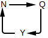
- A peptide that has a start and an end. It doesn't loop.

- A peptide derived taking some contiguous piece of a larger peptide. A subpeptide can have a length == 1 where a peptide must have a length > 1.
- The overall concept of transcription and translation: Instructions for making a protein are copied from DNA to RNA, then RNA feeds into the ribosome to make that protein (DNA → RNA → Protein).
Most, not all, peptides are synthesized as described above. Non-ribosomal peptides are synthesized outside of the transcription and translation.
- A peptide that was synthesized by a protein called NRP synthetase rather than synthesized by a ribosome. NRP synthetase builds peptides one amino acid at a time without relying on transcription or translation.
Non-ribosomal peptides may be cyclic. Common use-cases for non-ribosomal peptides:
- antibiotics
- anti-tumor agents
- immunosuppressors
- communication between bacteria (quorum sensing)
- A protein responsible for the production of a non-ribosomal peptide.
- A segment of an NRP synthetase protein responsible for the outputting a single amino acid. For example, the NRP synthetase responsible for producing Tyrocidine has 10 adenylation domains, each of which is responsible for outputting a single amino acid of Tyrocidine.
Adenylation domain may be shortened to A-domain.
- A device that randomly shatters molecules into pieces and measures the mass-to-charge of those pieces. The output of the device is a plot called a spectrum.
Note that mass spectrometers have various real-world practical problems. Specifically, they ...
- may not capture all possible pieces from the intended molecules (missing mass-to-charge ratios).
- may capture pieces from unintended molecules (faulty mass-to-charge ratios).
- will likely introduce noise into the pieces they capture.
- The output of a mass spectrometer. The...
- x-axis is the mass-to-charge ratio.
- y-axis is the intensity of that mass-to-charge ratio (how much more / less did that mass-to-charge appear compared to the others).

Note that mass spectrometers have various real-world practical problems. Specifically, they ...
- may not capture all possible pieces from the intended molecules (missing mass-to-charge ratios).
- may capture pieces from unintended molecules (faulty mass-to-charge ratios).
- will likely introduce noise into the pieces they capture.
As such, these plots aren't exact.
In a mass spectrometer output, the...
- x-axis is the mass-to-charge ratio.
- y-axis is the intensity.

- List of potential fragment masses derived from a spectrum. That is, the molecules fed into the mass spectrometer were randomly fragmented and each fragment had its mass-to-charge ratio measured. From there, each mass-to-charge ratio was converted a set of potential masses.
The masses in an experimental spectrum ...
- may not capture all possible fragments for the intended molecule (missing masses).
- may capture fragments from unintended molecules (faulty masses).
- will likely contain noise.
In the context of peptides, the mass spectrometer is expected to fragment based on the bonds holding the individual amino acids together. For example, given the linear peptide NQY, the experimental spectrum may include the masses for [N, Q, ?, ?, QY, ?, NQY] (? indicate faulty masses, Y and NQ missing).
- List of all of possible fragment masses for a molecule in addition to 0 and the mass of the entire molecule. This is what the experimental spectrum would be in a perfect world: no missing masses, no faulty masses, no noise, only a single possible mass for each mass-to-charge ratio.
In the context of peptides, the mass spectrometer is expected to fragment based on the bonds holding the individual amino acids together. For example, given the linear peptide NQY, the theoretical spectrum will include the masses for [0, N, Q, Y, NQ, QY, NQY]. It shouldn't include masses for partial amino acids. For example, it shouldn't include NQY breaking into 2 pieces by splitting Q, such that one half has N and part of Q, and the other has the remaining part of Q with Y.
- An operation used to derive amino acid masses that probably come from the peptide used to generate that experimental spectrum. That is, it generates a list of amino acid masses that could have been for the peptide that generated the experimental spectrum.
The operation derives amino acid masses by subtracting experimental spectrum masses from each other. For example, the following experimental spectrum is for the linear peptide NQY: [113.9, 115.1, 136.2, 162.9, 242.0, 311.1, 346.0, 405.2]. Performing 242.0 - 113.9 results in 128.1, which is very close to the mass for amino acid Y.
Note how the mass for Y was derived from the masses in experimental spectrum even though it's missing from the experimental spectrum itself:
- Mass of N is 114. 2 masses are close to 114 in the experimental spectrum: [113.9, 115.1].
- Mass of Q is 163. 1 mass is close to 163 in the experimental spectrum: [162.9].
- Mass of Y is 128. 0 masses are close to 128 in the experimental spectrum: [].
- A unit of measurement used in physics and chemistry. 1 Dalton is approximately the mass of a single proton / neutron, derived by taking the mass of a carbon-12 atom and dividing it by 12.
- A sequence of 3 ribonucleotides that maps to an amino acid or a stop marker. During translation, the ribosome translates the RNA to a protein 3 ribonucleotides at a time:
⚠️NOTE️️️⚠️
The stop marker tells the ribosome to stop translating / the protein is complete.
⚠️NOTE️️️⚠️
The codons are listed as ribonucleotides (RNA). For nucleotides (DNA), swap U with T.
| 1 Letter Code | 3 Letter Code | Amino Acid | Codons |
|---|---|---|---|
| A | Ala | Alanine | GCA, GCC, GCG, GCU |
| C | Cys | Cysteine | UGC, UGU |
| D | Asp | Aspartic acid | GAC, GAU |
| E | Glu | Glutamic acid | GAA, GAG |
| F | Phe | Phenylalanine | UUC, UUU |
| G | Gly | Glycine | GGA, GGC, GGG, GGU |
| H | His | Histidine | CAC, CAU |
| I | Ile | Isoleucine | AUA, AUC, AUU |
| K | Lys | Lysine | AAA, AAG |
| L | Leu | Leucine | CUA, CUC, CUG, CUU, UUA, UUG |
| M | Met | Methionine | AUG |
| N | Asn | Asparagine | AAC, AAU |
| P | Pro | Proline | CCA, CCC, CCG, CCU |
| Q | Gln | Glutamine | CAA, CAG |
| R | Arg | Arginine | AGA, AGG, CGA, CGC, CGG, CGU |
| S | Ser | Serine | AGC, AGU, UCA, UCC, UCG, UCU |
| T | Thr | Threonine | ACA, ACC, ACG, ACU |
| V | Val | Valine | GUA, GUC, GUG, GUU |
| W | Trp | Tryptophan | UGG |
| Y | Tyr | Tyrosine | UAC, UAU |
| * | * | STOP | UAA, UAG, UGA |
- The different ways of dividing a DNA string into codons. Specifically, there are 6 different ways that a DNA string can be divided into codons:
- You can start dividing at index 0, 1, or 2.
- You can divide either the DNA string itself or the reverse complementing DNA string.
For example, given the string ATGTTCCATTAA, the following codon division are possible:
| DNA | Start Index | Discard Prefix | Codons | Discard Suffix |
|---|---|---|---|---|
| ATGTTCCATTAA | 0 | ATG, TTC, CAT, TAA | ||
| ATGTTCCATTAA | 1 | A | TGT, TCC, ATT | AA |
| ATGTTCCATTAA | 2 | AT | GTT, CCA, TTA | A |
| TTAATGGAACAT | 0 | TTA, ATG, GAA, CAT | ||
| TTAATGGAACAT | 1 | T | TAA, TGG, AAC | AT |
| TTAATGGAACAT | 2 | TT | AAT, GGA, ACA | T |
⚠️NOTE️️️⚠️
TTAATGGAACAT is the reverse complement of ATGTTCCATTAA.
- When a DNA string or its reverse complement is made up of the codons required for an amino acid sequence. For example, ACAGTA encodes for the amino acid sequence...
- Threonine-Valine
- Tyrosine-Cysteine (derived from reverse complement)
- A bruteforce algorithm that enumerates candidates to explore at each step but also discards untenable candidates using various checks. The enumeration of candidates is the branching step, while the culling of untenable candidates is the bounding step.
- A sequence derived by traversing some other sequence in order and choosing which elements to keep vs delete. For example, can is a subsequence of cation.

Not to be confused with substring. A substring may also be a subsequence, but a subsequence won't necessarily be a substring.
- A sequence derived by taking a contiguous part of some other sequence (order of elements maintained). For example, cat is a substring of cation.

Not to be confused with subsequence. A substring may also be a subsequence, but a subsequence won't necessarily be a substring.
- Subsequence: A sequence derived by traversing some other sequence in order and choosing which elements to keep vs delete.
- Substring: A sequence derived by taking a contiguous part of some other sequence (order of elements maintained).
- A 1-dimensional ordering of nodes in a directed acyclic graph in which each node is ahead of all of its predecessors / parents. In other words, the node is ahead of all other nodes that connect to it.
For example, the graph ...

... the topological order is either [A, B, C, D, E] or [A, B, C, E, D]. Both are correct.
- A common subsequence between a set of strings of which is the longest out of all possible common subsequences. There may be more than one per set.
For example, AACCTTGG and ACACTGTGA share a longest common subsequence of...
-
ACCTGG...

-
AACTGG...

-
etc..
- Given a set of sequences, a sequence alignment is a set of operations applied to each position in an effort to line up the sequences. These operations include:
- insert/delete (indel for short).
- replace (also referred to as mismatch).
- keep matching (also referred to as match).
For example, the sequences MAPLE and TABLE may be aligned by performing...
| String 1 | String 2 | Operation |
|---|---|---|
| M | Insert/delete | |
| T | Insert/delete | |
| A | A | Keep matching |
| P | B | Replace |
| L | L | Keep matching |
| E | E | Keep matching |
Or, MAPLE and TABLE may be aligned by performing...
| String 1 | String 2 | Operation |
|---|---|---|
| M | T | Replace |
| A | A | Keep matching |
| P | B | Replace |
| L | L | Keep matching |
| E | E | Keep matching |
The names of these operations make more sense if you were to think of alignment instead as transformation. The first example above in the context of transforming MAPLE to TABLE may be thought of as:
| From | To | Operation | Result |
|---|---|---|---|
| M | Delete M | ||
| T | Insert T | T | |
| A | A | Keep matching A | TA |
| P | B | Replace P to B | TAB |
| L | L | Keep matching L | TABL |
| E | E | Keep matching E | TABLE |
The shorthand form of representing sequence alignments is to stack each sequence. The example above may be written as...
| 0 | 1 | 2 | 3 | 4 | 5 | |
|---|---|---|---|---|---|---|
| String 1 | M | A | P | L | E | |
| String 2 | T | A | B | L | E |
All possible sequence alignments are represented using an alignment graph. A path through the alignment graph (called alignment path) represents one possible way to align the set of sequences.
- A directed graph representing all possible sequence alignments for some set of sequences. For example, the graph showing all the different ways that MAPLE and TABLE may be aligned ...

A path in this graph from source (top-left) to sink (bottom-right) represents an alignment.
- A path in an alignment graph that represents one possible sequence alignment. For example, given the following alignment path ...

is represent as the alignment...
| 0 | 1 | 2 | 3 | 4 | 5 | 6 | 7 | |
|---|---|---|---|---|---|---|---|---|
| String 1 | - | - | M | A | P | - | L | E |
| String 2 | T | A | - | B | L | E | - | - |
- In the context of sequence alignment, indel is short-hand for insert/delete. For example, the following sequence alignment has 2 indels in the very beginning...
| Left | Right | Operation |
|---|---|---|
| M | Indel | |
| T | Indel | |
| A | A | Keep matching |
| P | B | Replace |
| L | L | Keep matching |
| E | E | Keep matching |
The term insert/delete makes sense if you were to think of the set of operations as a transformation rather than an alignment. For example, the example above in the context of transforming MAPLE to TABLE:
| From | To | Operation | Result |
|---|---|---|---|
| M | Delete M | ||
| T | Insert T | T | |
| A | A | Keep matching A | TA |
| P | B | Replace P to B | TAB |
| L | L | Keep matching L | TABL |
| E | E | Keep matching E | TABLE |
- A gene that has the potential to cause cancer. In tumor cells, these genes are often mutated or expressed at higher levels.
Most normal cells will undergo apoptosis when critical functions are altered and malfunctioning. Activated oncogenes may cause those cells to survive and proliferate instead.
- Given two strings, the hamming distance is the number of positional mismatches between them. For example, the hamming distance between TABLE and MAPLE is 2.
- An algorithm that solves a problem by recursively breaking it down into smaller sub-problems, where the result of each recurrence computation is stored in some lookup table such that it can be re-used if it were ever encountered again (essentially trading space for speed). The lookup table may be created before hand or as a cache that gets filled as the algorithm runs.
For example, imagine a money system where coins are represented in 1, 12, and 13 cent denominations. You can use recursion to find the minimum number of coins to represent some monetary value such as $0.17:
def min_coins(value):
if value == 0.01 or value == 0.12 or value == 0.13:
return 1
else:
return min([
min_coins(value - 0.01) + 1,
min_coins(value - 0.12) + 1,
min_coins(value - 0.13) + 1
])

The recursive graph above shows how $0.17 can be produced from a minimum of 5 coins: 1 x 13 cent denomination and 4 x 1 cent denomination. However, it recomputes identical parts of the graph multiple times. For example, min_coins(3) is independently computed 5 times. With dynamic programming, it would only be computed once and the result would be re-used each subsequent time min_coins(3) gets encountered.
- The Manhattan tourist problem is an allegory to help explain sequence alignment graphs. Where as in sequence alignments you're finding a path through the graph from source to sink that has the maximum weight, in the Manhattan tourist problem you're finding a path from 59th St and 8th Ave to 42nd St and 3rd Ave with the most tourist sights to see. It's essentially almost the same problem as global alignment (diagonal edges are missing):
- The graph is the street layout of Manhattan.
- The only options at each intersection are to move right or down.
- The source node is the intersection of 59th St and 8th Ave.
- The sink node is the intersection of 42nd St and 3rd Ave.
- The number of tourist sights per street is the weight of an edge.

- A scoring matrix used for sequence alignments of proteins. The scoring matrix is calculated by inspecting / extrapolating mutations as homologous proteins evolve. Specifically, mutations in the DNA sequence that encode some protein may change the resulting amino acid sequence for that protein. Those mutations that...
- impair the ability of the protein to function aren't likely to survive, and as such are given a low score.
- keep the protein functional are likely to survive, and as such are given a normal or high score.
Point accepted mutation, abbreviated to PAM.
- A scoring matrix used for sequence alignments of proteins. The scoring matrix is calculated by scanning a protein database for highly conserved regions between similar proteins, where the mutations between those highly conserved regions define the scores. Specifically, those highly conserved regions are identified based on local alignments without support for indels (gaps not allowed). Non-matching positions in that alignment define potentially acceptable mutations.
Blocks substitution matrix, abbreviated to BLOSUM.
- A mutation in DNA (or RNA) where a single nucleotide base is either changed, inserted, or deleted.
- A graph where the edges are directed (have a direction) and no cycles exist in the graph.
For example, the following is a directed acyclic graph...

The following graph isn't a directed acyclic graph because the edges don't have a direction (no arrowhead means you can travel in either direction)...
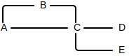
The following graph isn't a directed acyclic graph because it contains a cycle between D and B...
Directed acyclic graph, abbreviated to DAG.
- An algorithm that solves a problem by recursively breaking it down into two or more smaller sub-problems, up until the point where each sub-problem is small enough / simple enough to solve. Examples include quicksort and merge sort.
See dynamic programming.
- A form of sequence alignment that finds the highest scoring alignment between a set of sequences. The sequences are aligned in their entirety. For example, the sequences TRELLO and MELLOW have the following global alignment...
| 0 | 1 | 2 | 3 | 4 | 5 | 6 |
|---|---|---|---|---|---|---|
| T | R | E | L | L | O | - |
| - | M | E | L | L | O | W |
This is the form of sequence alignment that most people think about when they hear "sequence alignment."
- A form of sequence alignment that isolates the alignment to a substring of each sequence. The substrings that score the highest are the ones selected. For example, the sequences TRELLO and MELLOW have the following local alignment...
| 0 | 1 | 2 | 3 |
|---|---|---|---|
| E | L | L | O |
| E | L | L | O |
... because out of all substrings in TRELLO and all substrings in MELLOW, ELLO (from TRELLO) scores the highest against ELLO (from MELLOW).
- A form of 2-way sequence alignment that isolates the alignment such that the entirety of one sequence is aligned against a substring of the other sequence. The substring producing the highest score is the one that's selected. For example, the sequences ELO and MELLOW have the following fitting alignment...
| 0 | 1 | 2 | 3 |
|---|---|---|---|
| E | L | - | O |
| E | L | L | O |
... because out of all the substrings in MELLOW, the substring ELLO scores the highest against ELO.
- A form of 2-way sequence alignment that isolates the alignment to a suffix of the first sequences and a prefix of the second sequence. The prefix and suffix producing the highest score are the ones selected. For example, the sequences BURRITO and RICOTTA have the following overlap alignment...
| 0 | 1 | 2 | 3 | 4 |
|---|---|---|---|---|
| R | I | T | - | O |
| R | I | - | C | O |
... because out of all the suffixes in BURRITO and the prefixes in RICOTTA, RITO and RICO score the highest.
Name the following forms of sequence alignment:
-
Global alignment: Finds the highest scoring alignment between a set of sequences. The sequences are aligned in their entirety. For example, the sequences TRELLO and MELLOW have the following global alignment...
0 1 2 3 4 5 6 T R E L L O - - M E L L O W -
Local alignment: Isolates the alignment to a substring of each sequence. The substrings that score the highest are the ones selected. For example, the sequences TRELLO and MELLOW have the following local alignment...
0 1 2 3 E L L O E L L O -
Fitting alignment: Isolates the alignment such that the entirety of one sequence is aligned against a substring of the other sequence. The substring producing the highest score is the one that's selected. For example, the sequences ELO and MELLOW have the following fitting alignment...
0 1 2 3 E L - O E L L O -
Overlap alignment: Isolates the alignment to a suffix of the first sequences and a prefix of the second sequence. The prefix and suffix producing the highest score are the ones selected. For example, the sequences BURRITO and RICOTTA have the following overlap alignment...
0 1 2 3 4 R I T - O R I - C O
- An application of global alignment where the final weight represents the minimum number of operations required to transform one sequence to another (via swaps, insertions, and deletions). Matches are scored as 0, while mismatches and indels are scored at -1. For example, TRELLO and MELLOW have the Levenshtein distance of 3...
| 0_IGNORE | 1 | 2 | 3 | 4 | 5 | 6 | ||
|---|---|---|---|---|---|---|---|---|
| T | R | E | L | L | O | - | ||
| - | M | E | L | L | O | W | ||
| Score | -1 | -1 | 0 | 0 | 0 | 0 | -1 | Total: -3 |
Negate the total score to get the minimum number of operations. In the example above, the final score of -3 maps to a minimum of 3 operations.
- A type of mutation where chromosomes go through structural changes, typically caused by either
- breakages in the chromosome, where the broken ends possibly rejoin but in a different order / direction.
- DNA replication error.
- DNA repair error.
The different classes of rearrangement include...
-
reversal / inversion: A break at two different locations followed by rejoining of the broken ends in different order. and rejoin in different order

-
translocation:

-
deletion:

-
duplication:
-
chromosome fusion:

-
chromosome fission:
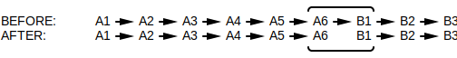
The segments of the genome that were moved around are referred to as synteny blocks.
- A gene born from two separate genes getting fused together. A chimeric gene may have been created via genome rearrangement translocations.
An example of a chimeric gene is the gene coding for ABL-BCR fusion protein: A fusion of two smaller genes (coding for ABL and BCR individually) caused by chromosomes 9 and 22 breaking and re-attaching in a different order. The ABL-BCR fusion protein has been implicated in the development of a cancer known as chronic myeloid leukemia.
- The minimum number of genome rearrangement reversals required to transform genome P to genome Q. The minimum is chosen because of parsimony.
The short-hand for this is .
- The mechanism by which sex chromosome gene expression is equalized between different sexes of the same species.
For example, mammals have two sexes...
- males, identified by one X chromosome and one Y chromosome.
- females, identified by two X chromosomes.
Since females have two X chromosomes, it would make sense for females to have double the gene expression for X chromosome genes. However, many X chromosome genes have nothing to do with sex and if their expression were doubled it would lead to disease. As such, female mammals randomly shut down one of two X chromosomes so as to keep X chromosome gene expression levels roughly equivalent to that of males.
For mammals, this mechanism means that X chromosomes are mostly conserved because an X chromosome that's gone through genome rearrangement likely won't survive: If a gene jumps off an X chromosome its gene expression may double, leading to problems.
Different species have different mechanisms for equalization. For example, some species will double the gene expression on the male's single X chromosome rather than deactivating one of the female's two X chromosomes. Other hermaphroditic species may scale down X chromosome gene expression when multiple X chromosomes are present.
- Intervals within two sets of chromosomes that have similar genes which are either in ...
-
the same order.
-
reverse order, where each gene's sequence is also reversed.

The idea is that as evolution branches out a single ancestor species to different sub-species, genome rearrangements (reversals, translocations, etc..) are responsible for some of those mutations. As chromosomes break and rejoin back together in different order, the stretches between breakage points remain largely the same. For example, it's assumed that mice and humans have the same ancestor species because of the high number of synteny blocks between their genomes (most human genes have a mouse counterpart).
- The scientific concept of choosing the fewest number of steps / shortest path / simplest scenario / simplest explanation that fits the evidence available.
- Given two genomes, create a 2D plot where each axis is assigned to one of the genomes and a dot is placed at each coordinate containing a match, where a match is either a shared k-mer or a k-mer and its reverse complement. Matches may also be fuzzily found (e.g. within some hamming distance rather).
For example, ...

Genomic dot-plots are typically used in building synteny graphs: Graphs that reveal shared synteny blocks (shared stretches of DNA). Synteny blocks exist because genome rearrangements account for a large percentage of mutations between two species that branched off from the same parent (given that they aren't too far removed -- e.g. mouse vs human).
- Given the genomic dot-plot for two genomes, cluster together points so as to reveal synteny blocks. For example, ...

... reveals that 4 synteny blocks are shared between the genomes. One of the synteny blocks is a normal match (C) while three are matching against their reverse complements (A, B, and D)...
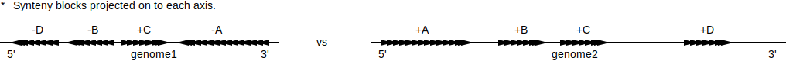
- Given two genomes that share synteny blocks, where one genome has the synteny blocks in desired order and direction while the other does not, an ...
-
adjacency is when two neighbouring synteny blocks in the undesired genome are following each other just as they do in the desired genome.
-
breakpoint is when two neighbouring synteny blocks in the undesired genome don't fit the definition of an adjacency: They aren't following each other just as they do in the desired genome.
Breakpoints and adjacencies are useful because they identify desirable points for reversals (genome rearrangement), giving way to algorithms that find / estimate the reversal distance. For example, a contiguous train of adjacencies in an undesired genome may identify the boundaries for a single reversal that gets the undesired genome closer to the desired genome.

The number of breakpoints and adjacencies always equals one less than the number of synteny blocks.

- An undirected graph representing the order and orientation of synteny blocks shared between two genomes.
For example, the following two genomes share the synteny blocks A, B, C, and D...

The breakpoint graph for the above two genomes is basically just a merge of the above diagrams. The set of synteny blocks shared between both genomes (A, B, C, and D) become dashed edges where each edge's...
- arrow end is a tail node (t suffix).
- non-arrow end is a head node (h suffix).
Gap regions between synteny blocks are represented by solid colored edges, either red or blue depending on which genome it is.
If the genomes are linear, gap region edges are created between the nodes and the edges and a special termination node.
In the above breakpoint graph, the blue edges represent genome 2's gap regions while the red edges represent genome 1's gap regions. The set of edges representing synteny blocks is shared between them.
Breakpoint graphs build on the concept of breakpoints to compute a parsimonious path of fusion, fission, and reversal mutations (genome rearrangements) that transforms one genome into the other (see 2-break). Conventionally, blue edges represent the final desired path while red edges represent the path being transformed. As such, breakpoint graphs typically order synteny blocks so that blue edges are uniformly sandwiched between synteny blocks / red edges get chaotically scattered around.
- Given a breakpoint graph, a 2-break operation breaks the two red edges at a synteny block boundary and re-wires them such that one of the red edges matches the blue edge at that boundary.
For example, the two red edges highlighted below share the same synteny block boundary and can be re-wired such that one of the edges matches the blue edge at that synteny boundary ...

Each 2-break operation on a breakpoint graph represents a fusion, fission, or reversal mutation (genome rearrangement). Continually applying 2-breaks until all red edges match blue edges reveals a parsimonious path of such mutations that transforms the red genome to the blue genome.
- A list representing a single chromosome in one of the two genomes that make up a breakpoint graph. The entire breakpoint graph is representable as two sets of permutations, where each genome in the breakpoint graph is a set.
Permutation sets are commonly used for tersely representing breakpoint graphs as text. For example, given the following breakpoint graph ...

... , the permutation set representing the red genome may be any of the following ...
{[-D, -B, +C, -A]}{[+A, -C, +B, +D]}{[-B, +C, -A, -D]}{[-C, +B, +D, +A]}{[+C, -A, -D, -B]}- ...
All representations above are equivalent.
⚠️NOTE️️️⚠️
See Algorithms/Synteny/Reversal Path/Breakpoint List Algorithm for a full explanation of how to read_NORM permutations / how to convert from and to breakpoint graphs.
- Joining two or more things together to form a single entity. For example, two chromosomes may join together to form a single chromosome (genome rearrangement).
- Splitting a single entity into two or more parts. For example, a single chromosome may break into multiple pieces where each piece becomes its own chromosome (genome rearrangement).
- Changing location. For example, part of a chromosome may transfer to another chromosome (genome rearrangement).
- A deadly coronavirus that emerged from China around early 2003. The virus transmits itself through droplets that enter the air when someone with the disease coughs.
- A family of viruses that attack the respiratory tracts of mammals and birds. The name comes from the fact that the outer spikes of the virus resemble the corona of the sun (crown of the sun / outermost part of the sun's atmosphere protruding out).
The common cold, SARS, and COVID-19 are examples of coronaviruses.
- A virus that over time causes acquired immunodeficiency syndrome (AIDS).
- The disease caused by the human immunodeficiency virus (HIV).
- A state in which the immune system's ability to fight infectious disease and cancer is compromised or entirely absent.
- A virus with a DNA genome. Depending on the type of virus, the genome may be single-stranded DNA or double-stranded DNA.
Herpes, chickenpox, and smallpox are examples of DNA viruses.
- A virus with a RNA genome. RNA replication has a higher rate than DNA replication, meaning that RNA viruses mutate faster than DNA viruses.
Coronaviruses, HIV, and influenza are examples of RNA viruses.
- The concept of inferring the evolutionary history among some set of species (shared ancestry) by inspecting properties of those species (e.g. relatedness of phenotypic or genotypic characteristics).
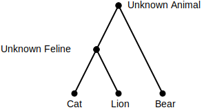
In the example above, cat and lion are descendants of some shared ancestor species. Likewise, that ancestor and bears are likely descendants from some other higher up species.
- A tree showing the degree in which biological species or entities (e.g. viruses) are related. Such trees help infer relationships such as common ancestry or which animal a virus jumped to humans from (e.g. virus A and B are related but A is only present in bats while B just showed up in humans).

- A metric used to measure how different a pair of entities are to each other. Examples include...
- hamming distance between DNA / protein sequences.
- global alignment score between DNA / protein sequences.
- two-break count (reversal distance).
- number of similar physical or behavioural attributes.
- euclidean distance between two vectors.
- pearson distance between two vectors.
- etc..
- Given a set of n different entities, a distance matrix is an n-by-n matrix where each element contains the distance between the entities for that cell. For example, for the species snake, lizard, bird, and crocodile ...
| Snake | Lizard | Bird | Crocodile | |
|---|---|---|---|---|
| Snake | 0 | 2 | 6 | 4 |
| Lizard | 2 | 0 | 6 | 4 |
| Bird | 6 | 6 | 0 | 5 |
| Crocodile | 4 | 4 | 5 | 0 |
The distance metric can be anything so long as it meets the following properties:
- Must produce a non-negative distance -- dist(A,B) >= 0
- Must produce the same distance regardless of species order -- dist(A,B) == dist(B,A)
- Must produce a distance that satisfies the triangle inequality property -- if dist(B,C) = x, then dist(A,B) + dist(A,C) >= x
⚠️NOTE️️️⚠️
I think what the last bullet point means is that the distance will be >= if you travel to it indirectly (hop over to it instead of taking a straight path). For example, if dist(B,C) = 5, then dist(A,B) + dist(A,C) must be >= 5.
A, B, and C are species.
Common distance metrics include...
- hamming distance between the DNA sequences.
- levenshtein distance between the DNA sequences.
- two-break count (reversal distance).
Distance matrices are used to generate phylogenetic trees. A single distance matrix may fit many different trees or it's possible that it fits no tree at all. For example, the distance matrix above fits the tree...

- In graph theory, a tree is an acyclic undirected graph in which any two nodes are connected by exactly one path (nodes branch outward / never converge).
Trees come in two forms: rooted trees and unrooted trees. In graph theory, a tree typically refers to an unrooted tree.
⚠️NOTE️️️⚠️
This is different from the computer science definition of tree, which is an abstract data type representing a hierarchy (always a single root that flows downwards), typically generalized as a directed acyclic graph as opposed to an undirected acyclic graph.
- A tree without a root node...

An unrooted tree may be turned into a rooted tree by choosing any non-leaf node (internal node) to be the root node
If injecting a node is a possibility, you can also convert an unrooted tree to a rooted tree by injecting a root node along one of its edges.
- A tree with a root node...
- Given a node in a tree, that node and all of its descendants comprise a subtree. For example, the following tree has the subtree ...
- The number of edges leading into / out of a node of an undirected graph.
The node below has a degree of 3.
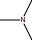
- An unrooted tree where ...
- every internal node has a degree > 2.
- every edge has a weight of > 0.

In the context of phylogeny, a simple tree's ...
- leaf nodes represent known entities.
- internal nodes represent inferred ancestor entities.
- edge weights represent distances between entities.
The restrictions placed on simple trees simplify the process of working backwards from a distance matrix to a phylogenetic tree.
- Given a distance matrix, if there exists a tree with edge weights that satisfy that distance matrix (referred to as fit), that distance matrix is said to be an additive distance matrix.
For example, the following tree fits the following distance matrix ...
| Cat | Lion | Bear | |
|---|---|---|---|
| Cat | 0 | 2 | 3 |
| Lion | 2 | 0 | 3 |
| Bear | 3 | 3 | 0 |

The term additive is used because the weights of all edges along the path between leaves (i, j) add to dist(i, j) in the distance matrix. Not all distance matrices are additive. For example, no simple tree exists that satisfies the following distance matrix...
| S1 | S2 | S3 | S4 | |
|---|---|---|---|---|
| S1 | 0 | 3 | 4 | 3 |
| S2 | 3 | 0 | 4 | 5 |
| S3 | 4 | 4 | 0 | 2 |
| S4 | 3 | 5 | 2 | 0 |
-
Test simple tree 1:
dist(S1, S2) is 3 = w + x dist(S1, S3) is 4 = w + y dist(S1, S4) is 3 = w + z dist(S2, S3) is 4 = x + y dist(S2, S4) is 5 = x + z dist(S3, S4) is 2 = y + zAttempting to solve this produces inconsistent results. Solved values for each variable don't work across all equations present.
-
Test simple tree 2:

dist(S1, S2) is 3 = w + x dist(S1, S3) is 4 = w + u + y dist(S1, S4) is 3 = w + u + z dist(S2, S3) is 4 = x + u + y dist(S2, S4) is 5 = x + u + z dist(S3, S4) is 2 = y + zAttempting to solve this produces inconsistent results. Solved values for each variable don't work across all equations present.
-
Test simple tree 3:

dist(S1, S2) is 4 = w + u + y dist(S1, S3) is 3 = w + x dist(S1, S4) is 3 = w + u + z dist(S2, S3) is 4 = x + u + y dist(S2, S4) is 2 = y + z dist(S3, S4) is 5 = x + u + zAttempting to solve this produces inconsistent results. Solved values for each variable don't work across all equations present.
-
etc..
- Given two leaf nodes in a tree, those leaf nodes are said to be neighbours if they share they connect to the same internal node. For example, leaf nodes A and B are neighbours in the following tree because they both connect to internal node D ...

⚠️NOTE️️️⚠️
A leaf node will only ever have 1 parent, by definition of a tree.
- Given a leaf node in a tree, that leaf node's limb is the edge between it and its parent (node it's connected to). For example, the following tree has the following limbs ...
- (A, D)
- (B, D)
- (G, I)
⚠️NOTE️️️⚠️
A leaf node will only ever have 1 parent, by definition of a tree.
- Given a leaf node in a tree, the leaf node's limb length is the weight assigned to its limb. For example, node A has a limb length of 2 in the following tree...

- An algorithm for determining if a distance matrix is an additive distance matrix. Given four leaf nodes, the algorithm checks different permutations of those leaf nodes to see if any pass a test, where that test builds node pairings from the quartet and checks their distances to see if they meet a specific condition...
for a, b, c, d in permutations(quartet, r=4): # find one perm that passes the following test
s1 = dist_mat[a][b] + dist_mat[c][d] # sum of dists for (a,b) and (c,d)
s2 = dist_mat[a][c] + dist_mat[b][d] # sum of dists for (a,c) and (b,d)
s3 = dist_mat[a][d] + dist_mat[b][c] # sum of dists for (a,d) and (b,c)
if s1 <= s2 == s3:
return True
return False
If all possible leaf node quartets pass the above test, the distance matrix is an additive distance matrix (was derived from a tree / fits a tree).
⚠️NOTE️️️⚠️
See Algorithms/Phylogeny/Test Additive Distance Matrix for a full explanation of how this algorithm works.
- A distance matrix where a leaf node's row and column have been removed. This is equivalent to removing the leaf node's limb in the corresponding simple tree and merging together any edges connected by nodes of degree 2.
For example, removing v2 from the following distance matrix...
| v0 | v1 | v2 | v3 | |
|---|---|---|---|---|
| v0 | 0 | 13 | 21 | 22 |
| v1 | 13 | 0 | 12 | 13 |
| v2 | 21 | 12 | 0 | 13 |
| v3 | 22 | 13 | 13 | 0 |

... results in v2's row and column being removed ...
| v0 | v1 | v3 | |
|---|---|---|---|
| v0 | 0 | 13 | 22 |
| v1 | 13 | 0 | 13 |
| v3 | 22 | 13 | 0 |
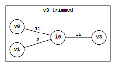
- An additive distance matrix where the distances in a leaf node's row and column have been subtracted by that leaf node's limb length. This is equivalent to setting the leaf node's limb length to 0 in the corresponding simple tree.
For example, balding v5's limb length in the following distance matrix ...
| v0 | v1 | v2 | v3 | v4 | v5 | |
|---|---|---|---|---|---|---|
| v0 | 0 | 13 | 21 | 21 | 22 | 22 |
| v1 | 13 | 0 | 12 | 12 | 13 | 13 |
| v2 | 21 | 12 | 0 | 20 | 21 | 21 |
| v3 | 21 | 12 | 20 | 0 | 7 | 13 |
| v4 | 22 | 13 | 21 | 7 | 0 | 14 |
| v5 | 22 | 13 | 21 | 13 | 14 | 0 |

... results in ...
| v0 | v1 | v2 | v3 | v4 | v5 | |
|---|---|---|---|---|---|---|
| v0 | 0 | 13 | 21 | 21 | 22 | 15 |
| v1 | 13 | 0 | 12 | 12 | 13 | 6 |
| v2 | 21 | 12 | 0 | 20 | 21 | 14 |
| v3 | 21 | 12 | 20 | 0 | 7 | 6 |
| v4 | 22 | 13 | 21 | 7 | 0 | 7 |
| v5 | 15 | 6 | 14 | 6 | 7 | 0 |
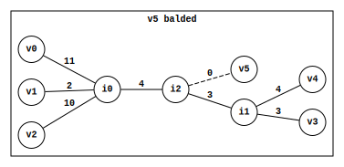
⚠️NOTE️️️⚠️
Technically, an edge weight of 0 is a violation of the simple tree requirement of having edge weights > 0. This is a special case.
⚠️NOTE️️️⚠️
How do you know the limb length from just the distance matrix? See the algorithm to determine limb length for any leaf from just the distance matrix.
- A recursive algorithm that finds the unique simple tree for some additive distance matrix. The algorithm trims a single leaf node at each recursive step until the distance matrix has a size of two. The simple tree for any two leaf nodes is those two nodes connected by a single edge. Using that tree as its base, the algorithm recurses out of each step by finding where that step's trimmed node exists on the tree and attaching it on.
At the end, the algorithm will have constructed the entire simple tree for the additive distance matrix. For example, ...
-
Initial distance matrix ...
v0 v1 v2 v3 v0 0 13 21 22 v1 13 0 12 13 v2 21 12 0 13 v3 22 13 13 0 -
Trim v1 to produce distance matrix ...
v0 v2 v3 v0 0 21 22 v2 21 0 13 v3 22 13 0 -
Trim v0 to produce distance matrix ...
v2 v3 v2 0 13 v3 13 0 -
Distance matrix maps to the obvious simple tree...

-
Attach v0 to produce tree...

-
Attach v1 to produce tree...

⚠️NOTE️️️⚠️
See Algorithms/Phylogeny/Distance Matrix to Tree/Additive Phylogeny Algorithm for a full explanation of how this algorithm works.
- Sum of errors squared is an algorithm used to quantify how far off some estimation / prediction is.
Given a set of real values and a set of predicted values, the error is the difference between the real and predicted values at each data point. For example...
| Real | 5 | 4 | 7 | 8 | 5 | 4 |
| Predicted | 4 | 5 | 7 | 6 | 4 | 4 |
| Error | 1 | -1 | 0 | 2 | 1 | 0 |
The algorithm squares each error and sums them together:
res = 0
for r_val, p_val in zip(real, predicted):
err = r_val - p_val
res += err ** 2
The algorithm as a formula:
- The evolutionary process by which a species splits into distinct child species.
In phylogenetic trees, internal nodes branching are assumed to be speciation events. That is, an event where the ancestral species represented by that node splits into distinct child species.
- In the context of phylogeny, an unrooted binary tree is a simple tree where internal nodes must have a degree of 3...

In other words, an edge leading to an internal node is guaranteed to branch exactly twice.

Contrast that to normal simple trees where internal nodes can have any degree greater than 2...

⚠️NOTE️️️⚠️
Recall that simple trees are unrooted to begin with and can't have nodes with degree 2 (train of non-branching edges not allowed).
- In the context of phylogeny, a rooted binary tree is an unrooted binary tree with a root node injected in between one of its edges. The injected root node will always end up as an internal node of degree of 2, breaking the constraint of ...
- unrooted binary trees that states internal nodes must have degree of exactly 3.
- simple trees that states internal nodes must have degree of greater than 2.

- A rooted tree where all leaf nodes are equidistant from the root.

In the example above, all leaf nodes are a distance of 4 from the root.
⚠️NOTE️️️⚠️
Does an ultrametric tree have to be a rooted binary tree? I think the answer is no: UPGMA generated rooted binary trees, but ultrametric trees in general just have to be rooted trees / they don't have to be binary.
- The assumption that the rate of mutation is more-or-less consistent. For example, ...
- every minute, around n of m nucleotides get mutated.
- every hour, around n genome rearrangement reversals occur per chromosome segment of size m.
- etc..
This assumption is used for some phylogeny algorithms (e.g. UPGMA).
- A heuristic algorithm used to estimate a binary ultrametric tree for some distance matrix.
⚠️NOTE️️️⚠️
A binary ultrametric tree is an ultrametric tree where each internal node only branches to two children. In other words, a binary ultrametric tree is a rooted binary tree where all leaf nodes are equidistant from the root.
The algorithm assumes that the rate of mutation is consistent (molecular clock). This assumption is what makes the tree ultrametric. A set of present day species (leaf nodes) are assumed to all have the same amount of mutation (distance) from their shared ancestor (shared internal node).

⚠️NOTE️️️⚠️
See Algorithms/Phylogeny/Distance Matrix to Tree/UPGMA Algorithm for a full explanation of how this algorithm works.
- A matrix produced by transforming a distance matrix such that each element is calculated as total_dist(a) + total_dist(b) - (n - 2) * dist(a, b), where...
- n is the number of leaf nodes in the distance matrix.
- a and b are the leaf nodes being referenced in the distance matrix.
- dist(a, b) returns the distance between leaf nodes a and b in the distance matrix.
- total dist(a) returns the sum of all distances to / from leaf node a.
- total dist(b) returns the sum of all distances to / from leaf node b.
The maximum element in the neighbour joining matrix is guaranteed to be for two neighbouring leaf nodes. For example, the following distance matrix produces the following neighbour joining matrix...
| v0 | v1 | v2 | v3 | v4 | v5 | |
|---|---|---|---|---|---|---|
| v0 | 0 | 13 | 21 | 21 | 22 | 22 |
| v1 | 13 | 0 | 12 | 12 | 13 | 13 |
| v2 | 21 | 12 | 0 | 20 | 21 | 21 |
| v3 | 21 | 12 | 20 | 0 | 7 | 13 |
| v4 | 22 | 13 | 21 | 7 | 0 | 14 |
| v5 | 22 | 13 | 21 | 13 | 14 | 0 |
| v0 | v1 | v2 | v3 | v4 | v5 | |
|---|---|---|---|---|---|---|
| v0 | 0 | 110 | 110 | 88 | 88 | 94 |
| v1 | 110 | 0 | 110 | 88 | 88 | 94 |
| v2 | 110 | 110 | 0 | 88 | 88 | 94 |
| v3 | 88 | 88 | 88 | 0 | 122 | 104 |
| v4 | 88 | 88 | 88 | 122 | 0 | 104 |
| v5 | 94 | 94 | 94 | 104 | 104 | 0 |
The maximum element is for (v3, v4), meaning that v3 and v4 are neighbouring leaf nodes.
⚠️NOTE️️️⚠️
See Algorithms/Phylogeny/Find Neighbours for a full explanation of how this algorithm works.
- A recursive algorithm that can either...
- find the unique simple tree for an additive distance matrix.
- approximate a simple tree for a non-additive distance matrix.
The algorithm finds and replaces a pair of neighbouring leaf nodes in the distance matrix with their shared parent at each recursive step (parent is promoted to a leaf node) until the distance matrix has a size of two. The simple tree for any two leaf nodes is those two nodes connected by a single edge. Using that tree as its base, the algorithm recurses out of each step by attaching the neighbours removed from the distance at that step to their parent in the tree.
⚠️NOTE️️️⚠️
The term neighbouring means having a shared parent in the tree, not next to each other in the distance matrix.
At the end, the algorithm will have constructed the entire simple tree for the additive distance matrix. For example, ...
-
Initial non-additive distance matrix ...
v0 v1 v2 v3 v0 0 16 22 22 v1 16 0 13 12 v2 22 13 0 11 v3 22 12 11 0 -
Replace neighbours (v1, v0) with their parent N1 to produce distance matrix ...
N1 v2 v3 N1 0 22 22 v2 9.5 0 11 v3 9 11 0 -
Replace neighbours (v2, v3) with their parent N2 to produce distance matrix ...
N1 N2 N1 0 3.75 N2 3.75 0 -
Distance matrix maps to the obvious simple tree...

-
Attach (v2, v3) to N2 to produce tree...
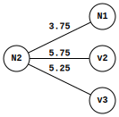
-
Attach (v1, v0) to N1 to produce tree...

⚠️NOTE️️️⚠️
See Algorithms/Phylogeny/Distance Matrix to Tree/Neighbour Joining Phylogeny Algorithm for a full explanation of how this algorithm works.
- The scientific study of ancient organisms: dinosaurs, prehistoric plants, prehistoric insects, prehistoric fungi, etc...
- The study of the identification and description of structures in organisms.
- The study of organism function.
- A matrix where the columns represent biological entities and the rows represent characteristics of those entities, where those characteristics are typically anatomically or physiologically.
| wings | sucks blood | number of legs | |
|---|---|---|---|
| house fly | 2 | no | 6 |
| mosquito | 2 | yes | 6 |
| snail | 0 | no | 0 |
Character tables were commonly used for phylogeny before discovering that DNA can be used to compare the relatedness of organisms.
A row in a character table is referred to as a character vector. Prior to the advent of sequencers, scientists would treat character vectors as sequences for generating phylogenetic trees or doing comparisons between organisms.
- DNA unique to the mitochondria. This DNA is unique to the mitochondria, different from the DNA of the cell that the mitochondria lives in. The mitochondria is suspected of being bacteria that made it into the cell and survived, forming a symbiotic relationship.
Mitochondrial DNA is inherited fully from the mother. It isn't a mix of parental DNA as the cell DNA is.
- In the context of phylogenetic trees, ...
- small parsimony: When a tree structure and its leaf node sequences are given, derive the internal node sequences with the lowest possible distance (most parsimonious).
- large parsimony: When only the leaf node sequences are given, derive the combination of tree structure and internal node sequences with the lowest possible distance (most parsimonious).

Large parsimony isn't a process that's normally done because the search space explodes in size (e.g. NP-complete). Instead, small parsimony is used on a tree generated using an algorithm like UPGMA or neighbour joining phylogeny.
⚠️NOTE️️️⚠️
The parsimony score algorithm is what's typically used to evaluate how well a combination of tree structure + ancestral sequences do.
- Given a phylogenetic tree with sequences for both leaf nodes (known entities) and internal nodes (inferred ancestral entities), the parsimony score is a measure of how far off a parent's sequence is from its children (and vice versa). The idea is that the most parsimonious evolutionary path is the one that's most likely to have occurred. As such, the less far off sequences are, the more likely it is that the actual ancestral lineage and ancestral sequences match what's depicted in the tree.

- A genus of yeast used for producing alcohol and bread.
- A change in the metabolism of Saccharomyces cerevisiae. When glucose is present, Saccharomyces cerevisiae consumes that glucose for energy and produces ethanol as a byproduct. Once all available glucose in the environment has been depleted, it inverts its metabolism to instead consume the ethanol byproduct it produced earlier.
The consumption of ethanol only happens in the presence of oxygen. Without oxygen, Saccharomyces cerevisiae enters hibernation until either glucose or oxygen become available. This property is what allows for the making of wine: Wine production typically involves sealed barrels that prevent oxygen from entering.
- A rare evolutionary event in which the entire genome of an organism is duplicated.
After duplication, much of the functionality provided by the genome becomes redundant. The organism evolves much more rapidly because a mutation in one copy of a gene won't necessarily make the organism less fit (duplicate copy still exists). It's typical for a whole genome duplication to be quickly followed up by massive amounts of gene mutations, gene loss, and genome rearrangements.
- A matrix where each column represents a point in time, each row represents a gene, and each cell is a number representing the amount of gene expression taking place for that gene (row) at that time (column).
| 5 AM | 6 AM | 7 AM | |
|---|---|---|---|
| Gene 1 | 1.0 | 1.0 | 1.0 |
| Gene 2 | 1.0 | 0.7 | 0.5 |
| Gene 3 | 1.0 | 1.1 | 1.4 |
Each row in a gene expression matrix is called a gene expression vector.
- A set of genes whose gene expression is regulated by the same transcription factor.
- RNA output of transcription.
- All RNA transcripts within a cell at a specific point in time.
- The idea that items within the same cluster should be more similar to each other than items in other clusters.
⚠️NOTE️️️⚠️
This was originally introduced as "every pair of points within the same cluster should be closer to each other than any points each from different clusters", where "closer" was implying euclidean distance. I think the idea was intended to be abstracted out to the definition above since the items may not be thought of as "points" but as vectors or sequences + you can choose a similarity metric other than euclidean distance.
- The distance between two points if traveling directly from one to the other in a straight line.

In 2 dimensional space, this is calculated as .
In 3 dimensional space, this is calculated as .
In n dimensional space, this is calculated as , where v and w are two n dimensional points.
- The distance between two points if traveling only via the axis of the coordinate system.

In n dimensional space, this is calculated as , where v and w are two n dimensional points.
⚠️NOTE️️️⚠️
The name manhattan distance is an allegory to the city blocks of manhattan, where your options (most of the time) are to move either left/right or up/down. Other names for this same metric are taxi-cab distance and city block distance.
- Grouping together a set of objects such that objects within the same group are more similar to each other than objects in other groups. Each group is referred to as a cluster.
- An object assigned to a cluster is said to be a member of that cluster.
- A form of clustering where a point, called a center, defines cluster membership_NORM. k different centers are chosen (one for each cluster), and the points closest to each center (euclidean distance) make up members of that cluster. The goal is to choose centers such that, out of all possible cluster center to member distances, the farthest distance is the minimum it could possibly be out of all possible choices for centers.
In terms of a scoring function, the score being minimized is ...
- P is the set of points.
- C is the set of centers.
- n is the number of points in P
- d returns the euclidean distance between a point and its closest center.
- max is the maximum function.
# d() function from the formula
def dist_to_closest_center(data_pt, center_pts):
center_pt = min(
center_pts,
key=lambda cp: dist(data_pt, cp)
)
return dist(center_pt, data_pt)
# scoring function (what's trying to be minimized)
def k_centers_score(data_pts, center_pts):
return max(dist_to_closest_center(p, center_pts) for p in data_pts)
For a non-trivial input, the search space is too massive for a straight-forward algorithm to work. As such, heuristics are commonly used instead.
⚠️NOTE️️️⚠️
See farthest first traversal heuristic.
- A heuristic commonly used for k-centers clustering. The algorithm iteratively builds out more centers by inspecting the euclidean distances from points to existing centers. At each step, the algorithm ...
- gets the closest center for each point,
- picks the point with the farthest euclidean distance and sets it as the new center.
The algorithm initially primes the list of centers with a randomly chosen point and stops executing once it has k points.

- A form of clustering where a point, called a center, defines cluster membership_NORM. k different centers are chosen (one for each cluster), and the points closest to each center (euclidean distance) make up members of that cluster. The goal is to choose centers such that, out of all possible cluster center to member distances, the formula below is the minimum it could possibly be out of all possible choices for centers.
The formula below is referred to as squared error distortion.
- P is the set of points.
- C is the set of centers.
- n is the number of points in P
- d returns the euclidean distance between a point and its closest center.
- max is the maximum function.
# d() function from the formula
def find_closest_center(data_pt, center_pts):
center_pt = min(
center_pts,
key=lambda cp: dist(data_pt, cp)
)
return center_pt, dist(center_pt, data_pt)
# scoring function (what's trying to be minimized) -- taking squares of d() and averaging
def squared_error_distortion(data_pts, center_pts):
res = []
for data_pt in data_pts:
closest_center_pt, dist_to = find_closest_center(data_pt, center_pts)
res.append(dist_to ** 2)
return sum(res) / len(res)
Compared to k-centers, k-means more appropriately handles outliers. If outliers are present, k-centers's metric causes the cluster center to be wildly offset while k-mean's metric will only be mildly offset. In the example below, the best scoring cluster center for k-centers is wildly offset by outlier Z while k-means isn't offset as much.

For a non-trivial input, the search space is too massive for a straight-forward algorithm to work. As such, heuristics are commonly used instead.
⚠️NOTE️️️⚠️
See Lloyd's algorithm.
⚠️NOTE️️️⚠️
The Pevzner book states that k-means clustering often doesn't produce good results if the clumps have a non-globular shape (e.g. elongated) or have widely different densities. This probably applies to k-centers as well
- A heuristic for determining centers in k-means clustering. The algorithm begins by choosing k arbitrary points from the points being clustered as the initial centers, then ...
-
derives clusters from centers: Each point is assigned to its nearest center (ties broken arbitrarily).
-
derives centers from clusters: Each center is updated to be the "center of gravity" of its points.
The center of gravity for a set of points is the average of each individual coordinate. For example, for the 2D points (0,5), (1,3), and (2,2), the center of gravity is (1, 3.3333). The ...
- first coordinate is calculated as
0+1+2/3 = 1. - second coordinate is calculated as
5+3+2/3 = 3.3333.
def center_of_gravity(data_pts, dim): center = [] for i in range(dim): val = mean(pt[i] for pt in data_pts) center.append(val) return center - first coordinate is calculated as
The above two steps loop repeatedly until the new centers are the same as the centers from the previous iteration (stops converging).
Since this algorithm is a heuristic, it doesn't always converge to a good solution. The algorithm typically runs multiple times, where the run producing centers with the lowest squared error distortion is accepted. An enhancement to the algorithm, called k-means++ initializer, increases the chances of converging to a good solution by probabilistically selecting initial centers that are far from each other:
- The 1st center is chosen from the list of points at random.
- The 2nd center is chosen by selecting a point that's likely to be much farther away from center 1 than most other points.
- The 3rd center is chosen by selecting a point that's likely to be much farther away from center 1 and 2 than most other points.
- ...
The probability of selecting a point as the next center is proportional to its squared distance to the existing centers.
def select_initial_centers(data_pts, k):
centers = [random.choice(data_pts)]
while len(centers) < k:
choice_points = []
choice_weights = []
for pt in data_pts:
if pt in centers:
continue
_, d = find_closest_center(pt, centers)
choice_weights.append(d)
choice_points.append(pt)
total = sum(choice_weights)
choice_weights = [w / total for w in choice_weights]
c_pt = random.choices(choice_points, weights=choice_weights, k=1).pop(0)
centers.append(c_pt)
return centers
- In the context of clustering, ...
-
soft clustering algorithms assign each object to a set of probabilities, where each probability is how likely it is for that object to be assigned to a cluster.

-
hard clustering algorithms assign each object to exactly one cluster.
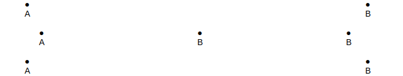
- Given two equal sized vectors, the dot product of those vectors is calculated by first multiplying the pair at each index, then summing the result of those multiplications together. For example, the dot product (1, 2, 3) and (4, 5, 6) is 1*4+2*5+3*6.
The notation for dot product is a central dot in between the two vector: .
⚠️NOTE️️️⚠️
Central dot is also commonplace for standard multiplication.
In geometry, the dot product of two vectors is used to get the angle between those vectors.
- The probability of an event occurring given that another event has already occurred.
The notation for conditional probability is Pr(B|A), where B is the event occurring and A is the event that's already occurred.
If B and A are...
- independent events, Pr(B|A) is simply Pr(B).
- dependent events, Pr(B|A) is calculated as the probability that both B and A happen divided by the probability that just A happens: Pr(A∩B) / Pr(A).
- A metric used to measure how similar a pair of entities are to each other. Whereas a distance metric must start at 0 for total similarity and grows based on how different the entities are, a similarity metric has no requirements for bounds on similarity or dissimilarity. Examples of similarity metrics include ...
- pearson similarity for gene expression vectors.
- cosine similarity for gene expression vectors.
- BLOSUM / PAM matrices for protein sequence alignments.
- etc..
⚠️NOTE️️️⚠️
This topic was only briefly discussed, so I don't know for sure what the properties/requirements are for a similarity metric other than higher = more similar. Contrast this to distance metrics, where it explicitly mentions the requirements that need to be followed (e.g. triangle inequality property). For similarity metrics, it didn't say if there's some upper-bound to similarity or if totally similar entities have to score the same. For example, does similarity(snake,snake) == similarity(bird,bird) have to be true or can it be that similarity(snake,snake) > similarity(bird,bird)?
I saw on Wikipedia that sequence alignment scoring matrices like PAM and BLOSUM are similarity matrices, so that implies that totally similar entities don't have to be the same score. For example, in BLOSUM62 similarity(A,A) = 4 but similarity(R,R) = 5.
Also, does a similarity metric have to be symmetric? For example, similarity(snake,bird) == similarity(bird,snake). I think it does have to be symmetric.
- Given a set of n different entities, a similarity matrix is an n-by-n matrix where each element contains the similarity measure between the entities for that cell. For example, for the species snake, lizard, bird, and crocodile ...
| Snake | Lizard | Bird | Crocodile | |
|---|---|---|---|---|
| Snake | 1.0 | 0.8 | 0.4 | 0.6 |
| Lizard | 0.8 | 1.0 | 0.4 | 0.6 |
| Bird | 0.4 | 0.4 | 1.0 | 0.5 |
| Crocodile | 0.6 | 0.6 | 0.5 | 1.0 |
⚠️NOTE️️️⚠️
This topic was only briefly discussed, so I have no idea what properties are required other than: 0 = completely dissimilar / orthogonal and anything higher than that is more similar. It didn't say if there's some upper-bound to similarity or if totally similar entities have to score the same. For example, does similarity(snake,snake) == similarity(bird,bird) have to be true or can it be that similarity(snake,snake) > similarity(bird,bird)? I saw on Wikipedia that sequence alignment scoring matrices like PAM and BLOSUM are similarity matrices, so that implies that totally similar entities don't have to be the same score. For example, in BLOSUM62 similarity(A,A) = 4 but similarity(R,R) =5.
There may be other properties involved, such as how the triangle inequality property is a thing for distance matrices / distance metrics.
- A metric used to quantify how correlated two vectors are.
In the above formula, x and y are the two input vectors and avg is the average function. The result of the formula is a number between -1 and 1, where ...
- -1 represents a total negative correlation.
- 0 represents no correlation.
- 1 represents a total positive correlation.
The formula may be modified to become a distance metric as follows: 1 - metric(x, y). Whereas the pearson correlation coefficient varies between -1 and 1, the pearson distance varies between 0 (totally similar) and 2 (totally dissimilar).
- A transformation of a similarity matrix into a graph, where the entities that make up the similarity matrix are represented as nodes and edges between nodes are only made if the similarity exceeds a certain threshold.
The similarity graph below was generated using the accompanying similarity matrix and threshold of 7.
| a | b | c | d | e | f | g | |
|---|---|---|---|---|---|---|---|
| a | 9 | 8 | 9 | 1 | 0 | 1 | 1 |
| b | 8 | 9 | 9 | 1 | 1 | 0 | 2 |
| c | 9 | 9 | 8 | 2 | 1 | 1 | 1 |
| d | 1 | 1 | 2 | 9 | 8 | 9 | 9 |
| e | 0 | 1 | 1 | 8 | 8 | 8 | 9 |
| f | 1 | 0 | 1 | 9 | 8 | 9 | 9 |
| g | 1 | 2 | 1 | 9 | 9 | 9 | 8 |
Similarity graphs are used for clustering (e.g. gene expression vectors). Assuming clusters exist and the similarity metric used captures them, there should be some threshold where the edges produced in the similarity graph form cliques as in the example above.
Since real-world data often has complications (e.g. noisy) / the similarity metric used may have complications, it could be that corrupted cliques are formed instead. Heuristic algorithms are often used to correct corrupted cliques.
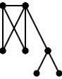
- A set of nodes in a graph where every possible node pairing has an edge.

- A set of nodes and edges in a graph that almost form a clique. Some edges may be missing or extraneous.
- A graph consisting only of cliques.

- A heuristic algorithm that corrects the corrupted cliques in a similarity graph.

The algorithm attempts to re-create each corrupted clique in its corrected form by iteratively finding the ...
- closest node not in the clique/cluster and including it if it exceeds the similarity graph threshold.
- farthest node within the clique/cluster and removing it if it doesn't exceed the similarity graph threshold.
How close or far a gene is from the clique/cluster is defined as the average similarity between that node and all nodes in the clique/cluster.
While the similarity graph has nodes, the algorithm picks the node with the highest degree from the similarity graph to prime a clique/cluster. It then loops the add and remove process described above until there's an iteration where nothing changes. At that point, that cluster/clique is said to be consistent and its nodes are removed from the original similarity graph.

- A technique which uses next-generation sequencing to reveal the presence and quantity of RNA in a biological sample at some given moment.
- A form of tiered clustering where clusters are represented as a tree. Each node represents a cluster (leaf nodes being a cluster of size 1), where the clusters represented by a parent node is the combination of the clusters represented by its children.
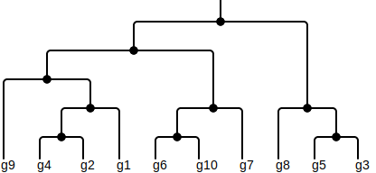
⚠️NOTE️️️⚠️
Hierarchical clustering has its roots in phylogeny. The similarity metric to build clusters is massaged into a distance metric, which is then used to form a tree that represents the clusters.
- A similarity metric that measures if two vectors grew/shrunk in a similar trajectories (similar angles).

The metric computes the trajectory as the cosine of an angle between vectors. In the example above, T and U have different magnitudes than A and B, but the angle between T and U is exactly the same as the angle between A and B: 20deg. The cosine similarity of both pairs is cos(20deg) = 0.939. Had the angle been ...
- smaller (more similar trajectory), the cosine would get closer to 1.
- larger (less similar trajectory), the cosine would get closer to -1.
The formula may be modified to become a distance metric as follows: 1 - cosine_similarity(x, y). Whereas the cosine similarity varies between -1 and 1, the cosine distance varies between 0 (totally similar) and 2 (totally dissimilar).
- A diagram of a tree. The term is most often used in the context of hierarchical clustering, where the tree that makes up the hierarchy of clusters is referred to as a dendrogram.
⚠️NOTE️️️⚠️
It's tough to get a handle on what the requirements are, if any, to call a tree a dendrogram: Is it restricted to 2 children per internal node (or can there be more)? Do the edges extending from an internal node have to be of equal weight (e.g. equidistant)? Does the tree have to be ultrametric? Does it have to be a rooted tree (or can it be an unrooted tree)?
It seems like you can call any tree, even unrooted trees, a dendrogram. This seems like a gate keeping term. "Draw the tree that makes up the hierarchical cluster" vs "Draw the dendrogram that makes up the hierarchical cluster".
- Given a set of transcriptome snapshots, where each snapshot is for the same species but in a different state, differential gene expression analyzes transcript abundances across the transcriptomes to see ...
- which genes are responsible for / influenced by the state,
- what the pattern of gene expression change is in those genes (transcript abundances).
For example, differential expression analysis may be used to compare cancerous and non-cancerous blood cells to identify which genes are responsible for the cancer and their gene expression levels.
| patient1 (cancer) | patient2 (cancer) | patient3 (non-cancer) | ... | |
|---|---|---|---|---|
| Gene A | 100 | 100 | 100 | ... |
| Gene B | 100 | 110 | 50 | ... |
| Gene C | 100 | 110 | 140 | ... |
| ... | ... | ... | ... | ... |
In the example above, gene B has roughly double the expression when cancerous.
⚠️NOTE️️️⚠️
Recall that genes are transcribed from DNA to mRNA, then translated to a protein. A transcript in a transcriptome is essentially a gene currently undergoing the process of gene expression.
⚠️NOTE️️️⚠️
I suspect the term transcript abundance is used instead of transcript count because oftentimes the counts are processed / normalized into some other form in an effort to denoise / de-bias (RNA sequencing is a noisy process).
- A rare disease causing learning disabilities and distinct facial features. The disease is caused by a single nucleotide polymorphism resulting in a truncated protein (see codons).
- A nucleotide variation at a specific location in a DNA sequence (e.g. position 15 has a SNP where it's A vs a SNP where it's T). While a single nucleotide polymorphism technically qualifies as a change in DNA, it occurs frequently enough that it's considered a variation rather than a mutation. Specifically, across the entire population, if the frequency of the change occurring is ...
- less than 1%, it's considered a point mutation.
- at least 1%, it's considered a single nucleotide polymorphism.
- The alignment of DNA sequences (e.g. read_SEQs, contigs, etc..) to some larger DNA sequence (e.g. reference genome).
- A genome assembled from multiple organisms of the same species, represented as the idealized genome for that species. Sequenced DNA fragment_SEQs / contigs of an organism are often read mapped against the reference genome for that organism's species, such that ...
- a clearer picture of the organism's genome is produced.
- single nucleotide polymorphisms can be found.
Reference genomes don't capture genomic nuances such as genome rearrangement, areas of high mutation, or single nucleotide polymorphisms. For example, roughly 0.1% of an individual human's genome can't be read mapped to the human reference genome (e.g. major histocompatibility complex).
A new type of reference genome, called a pan-genome, attempts to capture such nuances.
- A graph representing the relationships between a set of genomes. Pan-genomes are intended to be a new form of reference genome where nuances like genome rearrangements are retained.
- A region of DNA containing genes linked to the immune system. The genes in this region are highly diverse, to the point that it's unlikely for two individuals to have the genes in the exact same form.
- A rooted tree that holds a set of sequences. Shared prefixes between those sequences are collapsed into a single path while the non-shared remainders split out as deviating paths.

To disambiguate scenarios where one sequence is a prefix of the other, a trie typically either includes a ...
- a flag on each node to indicate if its the end of a sequence.
- a special "end-of-sequence" at the end of each sequence.
⚠️NOTE️️️⚠️
End of sequence marker is the preferred mechanism.
- A trie with special hop edges that eliminates redundant scanning during searches.
Given a trie containing sequence prefixes P1 and P2, a special hop edge (P1, P2) is added if P2 is equal to P1 but with its first element chopped off (P2 = P1[1:]). In the example below, a special hop edge connects "arat" to "rat".

If a scan walks the trie to "arat", the next scan must contain "rat". As such, a special edge connects "arat" to "rat" such that the next scan can start directly past "rat".

- A trie of all suffixes within a sequence.

Suffix tries are used to efficiently determine if a string contains a substring. The string is converted to a suffix trie, then the trie is searched from the root node to see if a specific substring exists.
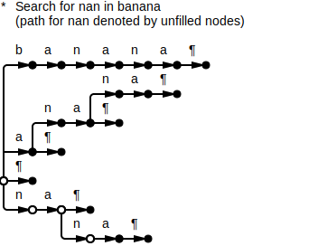
- A suffix trie where paths of nodes with indegree and outdegree of 1 are combined into a single edge. The elements at the edges being combined are concatenated together.
⚠️NOTE️️️⚠️
Implementations typically represent edge strings as pointers / string views back to the original string.
- A memory-efficient representation of a suffix tree as an array of pointers.
The suffixes of a sequence are sorted lexicographically, where each suffix includes the same end marker that's included in the suffix tree. The end marker comes first in the lexicographical sort order. The example below is the suffix array for the word banana.
| Index | Pointer | Suffix |
|---|---|---|
| 0 | 6 | ¶ |
| 1 | 5 | a¶ |
| 2 | 3 | ana¶ |
| 3 | 1 | anana¶ |
| 4 | 0 | banana¶ |
| 5 | 4 | na¶ |
| 6 | 2 | nana¶ |
The common prefix between two neighbouring suffixes represents a shared branch point in the suffix tree.

Sliding a window of size two down the suffix array, the changes in common prefix from one pair of suffixes to the next defines the suffix tree structure. If a pair's common prefix ...
- has the same length vs the previous pair, it means the branch point is the same as the previous pair's branch point.
- increases in length vs the previous pair, it means the branch point extends from the previous pair's branch point.
- decreases in length vs the previous pair, it means the branch point reverts to that of the last pair with that length.
In the example above, the common prefix length between index ...
- (0, 1) is 0, meaning it branches from the root node.
- (1, 2) is 1 ("a"), meaning the branch point extends from the last branch point (root node) with an edge representing the "a".
- (2, 3) is 3 ("ana"), meaning the branch point extends from the last branch point ("a") with an edge representing "na".
- (3, 4) is 0, meaning it branches from the root node.
- (4, 5) is 0, meaning it branches from the root node.
- (5, 6) is 2 ("na"), meaning the branch point extends from the last branch point (root node) with an edge representing "na".
⚠️NOTE️️️⚠️
The entire point of the suffix array is that it's just an array of pointers to the suffix in the source sequence. Since the pointers are sorted (sorted by the suffixes they point to), you can quickly find if a substring exists just by doing a binary search on the suffix array (if a substring exists, it must be a prefix of one of the suffixes).
{ankiHied} (BWT)/ - A matrix formed by combining all cyclic rotations of a sequence and sorting lexicographically. The sequence must have an end marker, where the end marker comes first in the lexicographical sort order (similar to suffix arrays).
The example below is the burrows-wheeler transform of "banana¶", where ¶ is the end marker.
-
Cyclic rotations.
b a n a n a ¶ ¶ b a n a n a a ¶ b a n a n n a ¶ b a n a a n a ¶ b a n n a n a ¶ b a a n a n a ¶ b -
Lexicographically sort the cyclic rotations.
¶ b a n a n a a ¶ b a n a n a n a ¶ b a n a n a n a ¶ b b a n a n a ¶ n a ¶ b a n a n a n a ¶ b a
BWT matrices have a special property called the first-last property which makes them suitable for quickly determining if and how many times a substring exists in the original sequence.
- The property of BWT matrices that guarantees consistent ordering of a symbol's instances between the first and last columns of a BWT matrix.
Consider the sequence "banana¶": The symbols in "banana¶" are {¶, a, b, n}. At index ...
- the first b occurs: b1
- the first a occurs: a1
- the first n occurs: n1
- the second a occurs: a2
- the second n occurs: n2
- the third a occurs: a3
- the first ¶ occurs: ¶1
With these occurrence counts, the sequence becomes b1a1n1a2n2a3¶1. In the BWT matrix, for each symbol, even though the position of symbol instances are different between the first and last columns, the order in which those instances appear in are the same. For example, ...
- symbol a instances are ordered as [a3, a2, a1] in both the first and last column.
- symbol n instances are ordered as [n2, n1] in both the first and last column.
| ¶1 | b1 | a1 | n1 | a2 | n2 | a3 |
| a3 | ¶1 | b1 | a1 | n1 | a2 | n2 |
| a2 | n2 | a3 | ¶1 | b1 | a1 | n1 |
| a1 | n1 | a2 | n2 | a3 | ¶1 | b1 |
| b1 | a1 | n1 | a2 | n2 | a3 | ¶1 |
| n2 | a3 | ¶1 | b1 | a1 | n1 | a2 |
| n1 | a2 | n2 | a3 | ¶1 | b1 | a1 |
The first-last property comes from lexicographic sorting. In the example matrix above, isolating the matrix to those rows starting with a shows that, the second column is also lexicographically sorted in the isolated matrix.
| a3 | ¶1 | b1 | a1 | n1 | a2 | n2 |
| a2 | n2 | a3 | ¶1 | b1 | a1 | n1 |
| a1 | n1 | a2 | n2 | a3 | ¶1 | b1 |
In other words, cyclically rotating each row right by 1 moves each corresponding a to the end but doesn't change the lexicographic ordering of the rows.
| ¶1 | b1 | a1 | n1 | a2 | n2 | a3 |
| n2 | a3 | ¶1 | b1 | a1 | n1 | a2 |
| n1 | a2 | n2 | a3 | ¶1 | b1 | a1 |
Once rotated, the rows in the isolated matrix become other rows from the original matrix. Since the rows in the isolated matrix are still lexicographically sorted, they're ordered as they appear in that original matrix.
| ¶1 | b1 | a1 | n1 | a2 | n2 | a3 |
| a3 | ¶1 | b1 | a1 | n1 | a2 | n2 |
| a2 | n2 | a3 | ¶1 | b1 | a1 | n1 |
| a1 | n1 | a2 | n2 | a3 | ¶1 | b1 |
| b1 | a1 | n1 | a2 | n2 | a3 | ¶1 |
| n2 | a3 | ¶1 | b1 | a1 | n1 | a2 |
| n1 | a2 | n2 | a3 | ¶1 | b1 | a1 |
Given just the first and last column of a BWT matrix, the original sequence can be pulled out by walking between those columns from last-to-first. Since it's known that ...
- the row containing the end marker (¶) within the first column has the sequence's last element within the last column,
- that end marker (¶) only appears once in the sequence and is always lexicographically sorted to the top of the first column,
... the walk always starts from the top row.

Likewise, given just the first and last column of a BWT matrix, it's possible to quickly identify if and how many instances of some substring exists in the original sequence.

-
pre-order traversal - A form of depth-first traversal for binary trees where, starting from the root node, ...
- visit current node.
- recursively visit current node's left subtree.
- recursively visit current node's right subtree.
⚠️NOTE️️️⚠️
Pre-order traversal is sometimes referred to as NLR (node-left-right).
For reverse pre-order traversal, swap steps 2 and 3: NRL (node-right-left).
⚠️NOTE️️️⚠️
This is a form of topological order traversal because the parent node is traversed before its children.
The term pre-order traversal also applies to non-binary trees (variable number of children per node): If the children have a specific order, pre-order traversal recursively visits each from first (left-most) to last (right-most).
-
post-order traversal - A form of depth-first traversal for binary trees where, starting from the root node, ...
- recursively visit current node's left subtree.
- recursively visit current node's right subtree.
- visit current node.

⚠️NOTE️️️⚠️
Post-order traversal is sometimes referred to as LRN (left-right-node).
For reverse post-order traversal, swap steps 1 and 2: RLN (right-left-node).
The term post-order traversal also applies to non-binary trees (variable number of children per node): If the children have a specific order, post-order traversal recursively visits each from last (right-most) to first (left-most).
-
in-order traversal - A form of depth-first traversal for binary trees where, starting from the root node, ...
- recursively visit current node's left subtree.
- visit current node.
- recursively visit current node's right subtree.
⚠️NOTE️️️⚠️
In-order is sometimes referred to as LNR (left-node-right).
For reverse in-order traversal, swap steps 1 and 3: RNL (right-node-left).
⚠️NOTE️️️⚠️
It's unclear if there's an analog for this for non-binary trees (variable number of children per node). Maybe if the children have a specific order, it recursively visits the first half (left children), then visits the parent node, then recursively visits the last half (right children). But, how would this work if there were an odd number of children? The middle child wouldn't be in the left-half or right-half.
- A heuristic algorithm that quickly finds shared regions between a query sequence and a database of sequences, where those shared regions are called high-scoring segment pairs. High-scoring segment pairs may be identified even in the presence of mutations, potentially even if mutated to the point where all elements are different in the shared region (e.g. BLOSUM scoring may deem two peptides to be highly related but they may not actually share any amino acids between them).
BLAST works by preprocessing the database of sequences into a hash table of k-mers, where other k-mers similar to those k-mers are included in the hash table as well. Similarity is determined by performing sequence alignments (the higher the score, the more similar the k-mer is).

K-mers from a query sequence are then looked up one-by-one in the hash table. Found matches are extended left and right until some criteria is met (e.g. the score drops below some threshold). The final product of the extension is called a high-scoring segment pair.

⚠️NOTE️️️⚠️
The Pevzner book and documentation online refers to k-mers from the query sequence as seeds and the extension left-and-right as seed extension.
- A substring of a string which is specifically used for mismatch tolerant searches.
The example below searches for GCCGTTTT with a mismatch tolerance of 1 by first breaking GCCGTTTT into two non-overlapping seeds (GCCG and TTTT), then searching for each seed independently. Since GCCGTTTT can only contain a single mismatch, that mismatch has to be either in the 1st seed (GCCG) or the 2nd seed (TTTT), not both.
Each found seed is then extended to cover the entirety of GCCGTTT and tested in full, called seed extension. If the hamming distance of the extended seed is within the mismatch tolerance of 1, it's considered a match.

It's impossible for d mismatches to exist across d + 1 seeds. There are more seeds than there are mismatches — at least one of the seeds must match exactly.

- A virus that inserts a DNA copy of its RNA genome into the DNA of the host cell that it invades.
- A class of medication used for treating viral infections.
⚠️NOTE️️️⚠️
The term antiretroviral therapy is commonly used to refer to HIV treatments, although retroviruses other than HIV exist (e.g. human T-lymphotropic virus)
- Protein embedded into a cell surface or viral envelope. See glycoprotein / glycan.
- One of the proteins making up the outermost layer of a virus, called the viral envelope.
A viral envelope often has one or more spikes which facilitate the entry of the virus's genetic material into the host cell.
- A protein containing glycans.
- A carbohydrate portion of some glycoconjugate (e.g. glycoprotein or glycolipid). Cells have a dense coating of glycans on their surface, which are used for modulating interactions with other cells and biological entities (e.g. communication between the cells of a human, interactions between bacterial cells and human cells, interactions between a human cells and viruses, etc..).
Glycans may also coat viral envelope proteins, which can make those viruses invisible to the human immune system (e.g. HIV).
- A modification to a protein, applied after it's already been translated out of the ribosome, that turns it into a glycoprotein.
- The hypothesis that organisms must constantly evolve in order to survive due to predator-prey dynamics within an environment. The name comes from Lewis Carroll's novel Through the Look-Glass, where the Red Queen tells Alice "Now, here, you see, it takes all the running you can do, to keep in the same place."
- A cytoplasmic mass containing several nuclei formed by the fusion of multiple cells. Certain HIV phenotypes embed their viral envelope proteins into the host cell's surface upon infection, which ends up causing neighbouring cells to fuse into a non-functional syncytium.
- A measure of the chance of success, defined as the probability of some event occurring divided by the probability that event doesn't occur. For example, given a based coin, a fair coin, and a sequence of flips, the probability the sequence of flips was generated by the ...
- the fair coin is stated as .
- the biased coin is stated as .
The odds ratio that the flips were generated by the fair coin is . Likewise, the odds ratio that the flips were generated by the biased coin is .
The result of an odds ratio is how much more likely the top of the fraction is vs the bottom. For example, if the odds ratio for results in 2, it means that it's two times more likely for the fair coin to have been used vs the biased coin.
- The logarithm of the odds ratio: . Log-odds ratio is just another representation of odds ratio, typically used in cases when odds ratio generates a very small / large result.
| odds ratio | log-odds ratio |
|---|---|
| 0.015625 (1/64) | -6 |
| 0.03125 (1/32) | -5 |
| 0.0625 (1/16) | -4 |
| 0.125 (1/8) | -3 |
| 0.25 (1/4) | -2 |
| 0.5 (1/2) | -1 |
| 1 | 0 |
| 2 | 1 |
| 4 | 2 |
| 8 | 3 |
| 16 | 4 |
| 32 | 5 |
| 64 | 6 |
- The addition of a methyl group (CH3) to a cytosine or guanine nucleotide.
DNA methylation is an important part of cell development. Specifically, when a stem cell converts into a specialized cell (cell differentiation), DNA methylation is an important factor in the change:
- DNA methylation often alters the expression of nearby genes.
- When a gene's upstream regions become highly methylated, its expression is suppressed.
DNA methylation is typically permanent (specialized cell cannot convert back to stem cell) and inherited during cell division, except in the case of zygote formation. Also, various cancers have been linked to both DNA hypermethylation and DNA hypomethylation.
When cytosine goes through DNA methylation, it has a tendency to deaminate to thymine. However, DNA methylation is often suppressed in areas of DNA dubbed CG-islands, where CG appears more frequently than the rest of the genome.
- Regions of DNA with a high frequency of cytosine followed by guanine. The reverse complementing strand will have equal regions with equally high frequencies of guanine followed by cytosine.
- A model of a machine that outputs a sequence.

The machine being modeled can be in one of many hidden states (called hidden because that state is unobservable). For example, the machine above could be in one of two hidden states: Gene or Non-gene. If in the ...
- gene hidden state, it's outputting DNA for a region of DNA that's a gene.
- non-gene hidden state, it's outputting DNA for a region of DNA that isn't a gene (e.g. telomeres).
At each step, the machine transitions from its existing hidden state to another hidden state and emits a symbol (transitions to the same hidden state are possible). For the example machine above, the emitted symbols are nucleotides (A, C, T, and G).
An HMM models such a machine by using four pieces of information:
-
Set of hidden states the machine can be in:
{gene, non-gene} -
Set of symbols that the machine can emit:
{A, C, T, G} -
Set of hidden state-to-hidden state transition probabilities:
{ [gene, gene]: 0.9, [gene, non-gene]: 0.1, [non-gene, gene]: 0.1, [non-gene, non-gene]: 0.9 } -
set of hidden state-to-symbol emission probabilities.
{ gene: {A: 0.2, B: 0.3, C: 0.1, D: 0.4}, non-gene: {A: 0.3, B: 0.2, C: 0.2, D: 0.3} }
HMMs are often represented using HMM diagrams.
⚠️NOTE️️️⚠️
The probabilities above are totally made up. The example machine above is a bad example to model as an HMM. Only 2 hidden states and emitting a single nucleotide will result in a useless HMM model. The machine should be modeled as emitting 5-mers or something else and would likely need more than 2 hidden states?
- A visualization of an HMM as a directed graph.
- Solid nodes represent hidden states.
- Solid edges represent hidden state transitions.
- Dashed nodes represent symbols.
- Dashed edges represent symbol emissions.
Edges are labeled with the probability of the hidden state transition / symbol emission occurring.
- A state within an HMM. At any given time, a HMM will be in one of n different hidden states. Unless a hidden state is a non-emitting hidden state, ...
- a HMM transitioning to that hidden state will result in a symbol emission (e.g. [foul, miss, hit] in the HMM diagram below).
- the probability of symbol emission depends on the hidden state (e.g. emitting foul from hitter bat has 0.15 probability vs fouler bat has 0.4 probability, in the HMM diagram below).
⚠️NOTE️️️⚠️
I think the word "hidden" is used because the machine that an HMM models typically has unobservable state (as in you can't observe its state, hence the word hidden).
In the HMM diagram below, the hidden states are [SOURCE, hitter bat, quitter bat].
- A hidden state that emits a symbol. An HMM typically emits a symbol after transitioning between hidden states. However, if the hidden state being transitioned to is a non-emitting hidden state, it doesn't emit a symbol.
- A hidden state that doesn't emit symbols. An HMM typically emits a symbol after transitioning between hidden states. However, if the hidden state being transitioned to is a non-emitting hidden state, it doesn't emit a symbol.
An HMM ...
- typically has a non-emitting hidden state that represents the start state of the machine.
- may have a non-emitting hidden state that represents the termination state of the machine.
- may have several other non-emitting hidden states (not related to machine start or termination).
The HMM diagram below has the non-emitting hidden state SOURCE, which represents the machine's start state.
- A sequence of hidden state transitions that a HMM passes through. For example, in the HMM diagram below, one possible hidden path could be as follows:
- SOURCE → fouler bat
- fouler bat → hitter bat
- hitter bat → hitter bat
- hitter bat → hitter bat
- hitter bat → hitter bat
- hitter bat → hitter bat
- A symbol emitted after a hidden state transition. The HMM diagram below can emit the symbols [hit, miss, foul].
- A sequence of symbol emissions, where those symbols are emitted from an HMM. The HMM diagram below can produce the emitted sequence ...
- [hit, hit hit]
- [hit, hit hit, hit]
- [hit, hit hit, hit, hit]
- [hit, hit hit, hit, foul]
- [hit, hit hit, hit, miss]
- [hit, hit hit, foul, hit]
- ...
- An algorithm that determines the most probable hidden path in an HMM for some emitted sequence.
The algorithm begins by transforming an HMM to an exploded HMM.
Each edge in the exploded HMM represents a hidden state transition (e.g. fouler bat → hitter bat) followed by a symbol emission (e.g. hit emitted after reaching hitter bat). The algorithm sets each exploded HMM edge's weight to that probability of that edge's transition-emission occurring: Pr(symbol|transition) = Pr(transition) * Pr(symbol). For example, Pr(fouler bat → hitter bat) is 0.1 in the HMM diagram above, and Pr(hit) once entered into the hitter bat hidden state is 0.75, so Pr(hit|fouler bat → hitter bat) = 0.1 * 0.75 = 0.075.
| Pr(hit) | Pr(miss) | Pr(foul) | NON-EMITTABLE | |
|---|---|---|---|---|
| Pr(hitter bat → hitter bat) | 0.9 * 0.75 = 0.675 | 0.9 * 0.1 = 0.09 | 0.9 * 0.15 = 0.135 | |
| Pr(hitter bat → fouler bat) | 0.1 * 0.5 = 0.05 | 0.1 * 0.1 = 0.01 | 0.1 * 0.4 = 0.04 | |
| Pr(fouler bat → hitter bat) | 0.1 * 0.75 = 0.075 | 0.1 * 0.1 = 0.01 | 0.1 * 0.15 = 0.015 | |
| Pr(fouler bat → fouler bat) | 0.9 * 0.5 = 0.45 | 0.9 * 0.1 = 0.09 | 0.9 * 0.4 = 0.36 | |
| Pr(SOURCE → hitter bat) | 0.5 * 0.75 = 0.375 | 0.5 * 0.1 = 0.05 | 0.5 * 0.15 = 0.075 | |
| Pr(SOURCE → fouler bat) | 0.5 * 0.5 = 0.25 | 0.5 * 0.1 = 0.05 | 0.5 * 0.4 = 0.2 | |
| Pr(hitter bat → SINK) | 1.0 | |||
| Pr(fouler bat → SINK) | 1.0 |
⚠️NOTE️️️⚠️
The transitions to the SINK node are set to 1.0 because, once the emitted sequence ends, there's a 100% chance of going to the SINK node (no other options are available).

⚠️NOTE️️️⚠️
The example above doesn't cover non-emitting hidden states. A non-emitting hidden state's probability will be Pr(transition) because transitioning to it won't result in a symbol emission.
See Algorithms/Discriminator Hidden Markov Models/Most Probable Hidden Path/Viterbi Non-emitting Hidden States Algorithm_TOPIC
The directed graph above is called a Viterbi graph. The goal with a Viterbi graph is to determine the most likely set of hidden state transitions that resulted in the emitted symbols, which is the path from source node to sink node with the highest product (multiplication) of edge weights. In the example above, that path is ...
- Pr(foul|SOURCE → fouler bat): 0.02
- Pr(hit|fouler bat → fouler bat): 0.45
- Pr(miss|fouler bat → fouler bat): 0.09
- Pr(hit|fouler bat → fouler bat): 0.45
- Pr(hit|fouler bat → fouler bat): 0.45
- Pr(fouler bat → SINK): 1.0
0.2 * 0.45 * 0.09 * 0.45 * 0.45 = 0.0016.
- A transformation of an HMM such that hidden state transitions are enumerated based on an emitted sequence (HMM cycles removed).

The HMM above is transformed to an exploded HMM based on the emitted sequence [foul, hit, miss, hit]. Each column in the exploded HMM represents an index within the emitted sequence, where that column replicates all possible hidden state transitions that lead to that index (both nodes and edges).
- SOURCE: Possible transitions are to [hitter bat, fouler bat], both of which lead to index 0 being emitted: [SOURCE → hitter bat0, SOURCE → fouler bat0].
- hitter bat0: Possible transitions are to [hitter bat, fouler bat], both of which lead to index 1 being emitted: [hitter bat0 → hitter bat1, hitter bat0 → fouler bat1].
- fouler bat0: Possible transitions are to [hitter bat, fouler bat], both of which lead to index 1 being emitted: [fouler bat0 → hitter bat1, fouler bat0 → fouler bat1].
- hitter bat1: Possible transitions are to [hitter bat, fouler bat], both of which lead to index 2 being emitted: [hitter bat1 → hitter bat2, hitter bat1 → fouler bat2].
- fouler bat1: Possible transitions are to [hitter bat, fouler bat], both of which lead to index 2 being emitted: [fouler bat1 → hitter bat2, fouler bat1 → fouler bat2].
- ...
- hitter bat3: Emissions have ended, leading to an artificially placed sink node: [hitter bat3 → SINK, hitter bat3 → SINK].
- fouler bat3: Emissions have ended, leading to an artificially placed sink node: [fouler bat3 → SINK, fouler bat3 → SINK].
⚠️NOTE️️️⚠️
In certain algorithms, the sink node may exist in the HMM (meaning it isn't artificial).
⚠️NOTE️️️⚠️
The example above doesn't include non-emitting hidden states. A non-emitting hidden state means that a transition to that hidden state doesn't result in a symbol emission. In other words, the emission index wouldn't increment, meaning the exploded HMM node would end up under the same column as the node that's pointing to it.
Consider if fouler bat in the example above had a transition to a non-emitting hidden state called bingo. At ...
- fouler bat0, the transition to bingo would be fouler bat0 → bingo0.
- fouler bat1, the transition to bingo would be fouler bat1 → bingo1.
- etc...
Exploded bingo nodes maintain the same index as their exploded fouler bat predecessor because bingo is a non-emitting hidden state (nothing gets emitted when you transition to it, meaning you stay at the same index).
- A Monte Carlo algorithm that uses the Viterbi algorithm to derive an HMM's probabilities from an emitted sequence.
- A Monte Carlo algorithm that uses confidence measurements to derive an HMM's probabilities from an emitted sequence.